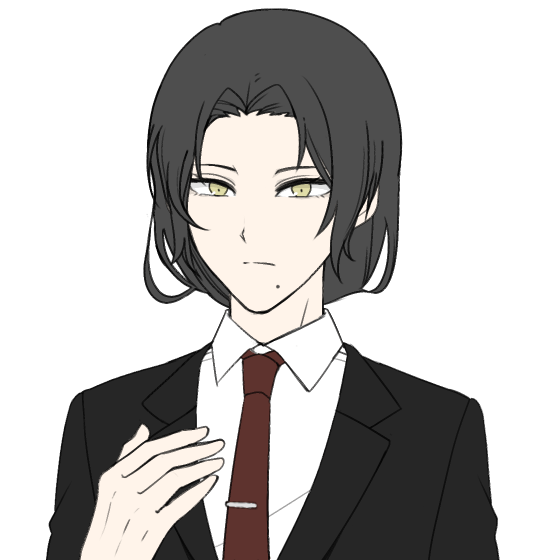
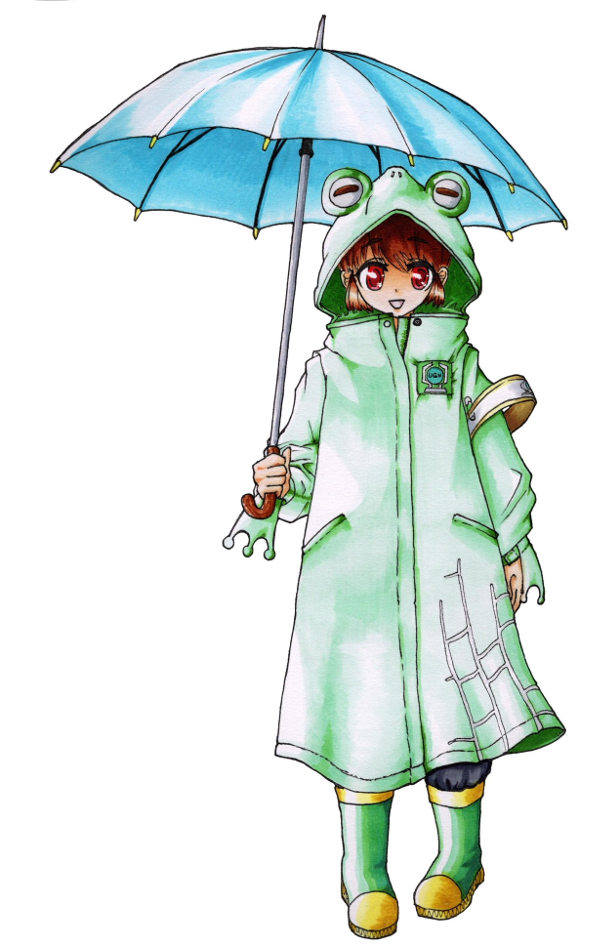
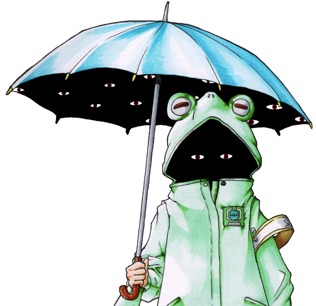
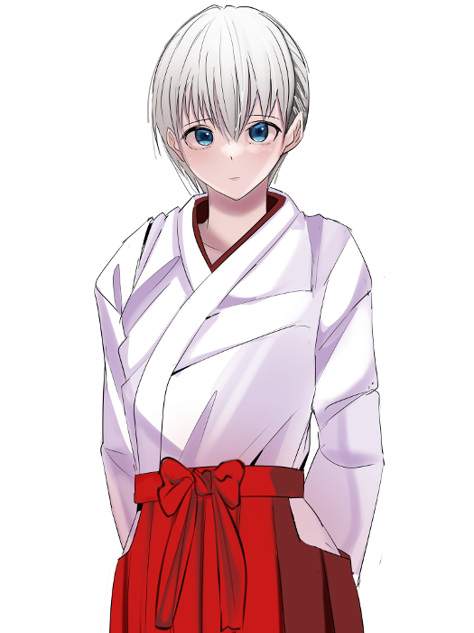
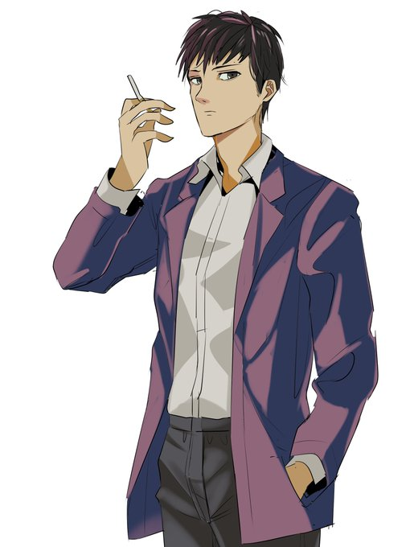
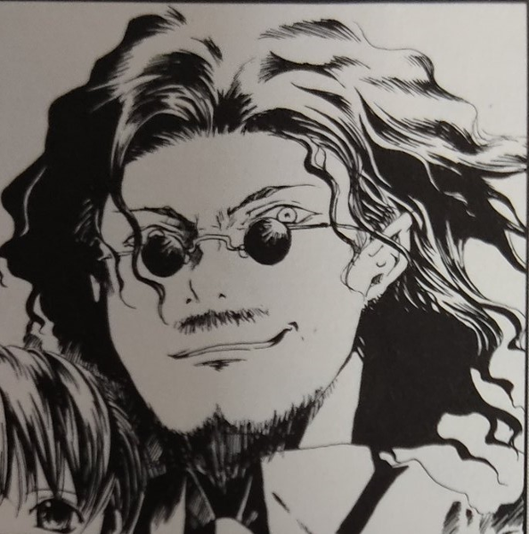
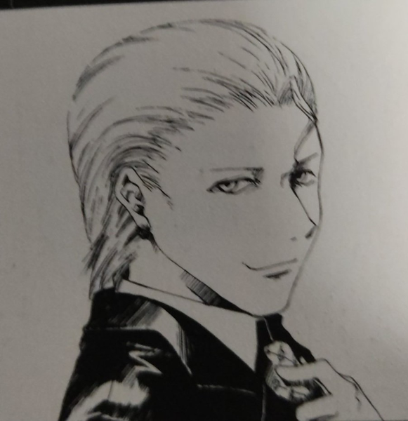

GM : ではPCの紹介から！PC1から順にお願いします！
新城りりか : はい！
新城りりか : 新城りりか、コードネームはバッドジョーカー！
新城りりか : ピンク髪ツインテールで制服のスカートを限界まで短くしてる頭ゆるゆるの女子高生です！
新城りりか : FHチルドレンだったけどわけあって自分のセルをぶち壊してFHを離反した後、霧谷くんに助けられてなんやかんやで恩を返すためにイリーガルになりました！
新城りりか : UGNからもFHからも恨みを買いまくってるけど、特に気にせずバット振り回して暴れてます！よろしくお願いします
GM : 顔に似合わず無頼系だ！ 今回はUGN存亡の危機なので自慢のバットで頑張ってほしいね…！
新城りりか : がんばりりか！
■PC1：新城りりか
ロイス：神崎真白(かんざき・ましろ) 推奨感情：庇護/不安
カヴァー/ワークス：高校生/指定無し
友人達と共にある生活を営みながら、UGNイリーガルとして生きるキミに、ひとつの"指令"が下された。
数日後にパレスＫホテルで開かれるUGN幹部会議を警護せよ、というものだ。
その中で起こった"彼女"との出会いが、キミを再び非日常の世界へと誘う──。
GM : ハンドアウトはこんな感じ！
新城りりか : ましましろーん…どんな感じになるか楽しみしみ
神崎 真白 : 楽しみね…GMもこれから動かしていく中でキャラを確立していくことになる…と思う！
GM : じゃあ次いきましょ！ PC2お願いします！
円藤 照 : はいな！
円藤 照 : 円藤支部長は、"エスケープキラー"の異名で恐れられるUGN本部査察部第4課(UG78頁)をかつて束ねていた人物です。
円藤 照 : 後の中枢評議員であり、今は査察部部長である"ミリオンサンズ"アッシュ・レドリック(上級91頁/HR36頁)の「UGNには改革が必要である」という考えに賛同し、彼の右腕として数々の離反者たちを裁いてきました。
円藤 照 : しかし、UGN評議員入りを目前にして彼が指示したと思われる「正義のための不正」を認めることができなかったため、彼の下を去りました。
円藤 照 : 査察部を辞めた後は、日本のK市を守る支部長として「自分の正義とは何なのか」を考えながら、のんびりと過ごしています。
円藤 照 : 戦闘では、自身を中心とした環状に浮かぶ魔眼を高速旋回することで、斬撃を生み出して攻撃します！ データ的には、範囲攻撃と防御反射を主な武器として、クライマックスでは敵の行動封じとか味方の支援とかの様々な切り札を持ってます！！
円藤 照 : RPでは、大人のヨユウで一歩引いたイケメン保護者ムーヴができたらいいなってカンジ！！ 以上！！
GM : かっこいい支部長！ 今回K市がいろいろ大変なことになるので…存分にイケメンしてくれ！
■PC2：円藤照
ロイス："ネームレス" 推奨感情：感服/隔意
カヴァー/ワークス：指定なし/UGN支部長
K市のUGN支部長として様々な難題を解決してきたキミは、
数日後に行われるUGN幹部会議の警備責任者を任された。
キミは、これまでキミの輝かしい経歴を支えてくれた情報屋……
コードネーム"ネームレス"に任務をサポートして貰うために連絡をとった。
GM : ハンドアウトはこんな感じ！どう見てもただの犬だが凄腕の情報屋につながっている”ネームレス”からタレコミが入るぞ
円藤 照 : 査察部時代から"ネームレス"とは付き合いがある設定にしたので、わんことも仲良くしていきたいね…🐶
GM : よろしくだワン…今回は査察部がらみのキャラが多い珍しいセッションだ
GM : では最後！PC3おねがいします！
蛙御蛇 晴 : へへい！
蛙御蛇 晴 : "天の恵み"(ｳｪｻﾞｰﾄﾗｯﾌﾟ)、蛙御蛇晴(あみだはる)ちゃん！
蛙御蛇 晴 :
FHの活動によって両親は死亡、妹は精神的なショックにより病院を出ることができない体になってしまったよ！
その際にこの子も致命傷を負ったけど、オーヴァードに覚醒！一緒に傘とレインコートもレネゲイドに感染して、彼女の体が如く操れるようになったよ！
蛙御蛇 晴 : この武装と、降りしきる魔眼の雨にちなんで"天の恵み"っていうコードネームがついたけど本人は皮肉にしか思ってないよ
蛙御蛇 晴 : UGNで査察官として働きつつ、妹の天を助ける方法を模索しているわね。
蛙御蛇 晴 : 普段から朗らかな笑顔だけど、本人曰く「それは傘が代わりに泣いてくれているから」らしいよ
蛙御蛇 晴 : FHはキツめに憎んでるよ
GM : ヒエッ…
蛙御蛇 晴 : 戦闘では、最速で動いて硬直をかますタイプになるかしら、火力も出す
蛙御蛇 晴 : ロールプレイはこう…ちょっと冷たいけどフレンドリーな口調って感じになると思う
蛙御蛇 晴 : 以上！
GM : 了解了解！ PC1ともPC2とも絡みが楽しみな設定だ…
■PC3：蛙御蛇晴
ロイス：反乱を企む者 推奨感情：好奇心/猜疑心
カヴァー/ワークス：指定なし/UGNエージェント
キミはUGNの本部エージェントだ。
近く行われるUGN幹部会議のため、K市を訪れていたあなたは、
唐突に同じ本部エージェントである一人の男からの連絡を受ける。
「重大な情報を入手した。お前に託したい」と。
GM : 公式のハンドアウトはこんな感じ。天道は元査察部の同僚で、仕事の合間を縫ってあなたの妹の病気の調査に協力してくれたりしていました。
蛙御蛇 晴 : 感謝しかない
天道 大地 : 元警察官の真面目で面白味に欠ける性格だが、それだけに信用のできる人間という感じですね！ そんな彼から今回は協力を依頼されます
GM : では自己紹介は以上。オープニングへ入っていきましょう
新城りりか : いぇいいぇい！
蛙御蛇 晴 : ﾖｯｼｬｲｸｿﾞｰ!
円藤 照 : わあい！
GM : PC1のオープニングです！登場侵蝕を5点上げてください。
system : [ 新城りりか ] 侵蝕値 : 30 → 35
GM : 冬も近づくある日。
GM : あなたは、数日後に行われるUGN幹部会議の会場となるパレスKホテルへの道を急いでいた。
GM : 複雑な過去から、普段は現地のUGNと協力することも少ないあなただが、重要な会議が行われるという事情もあり、日本支部長たっての希望で今回の会議の警備へ参加することになっていた。
GM : 時計を確認すれば、警備隊長である円藤照との打ち合わせ時刻に遅刻しそうだ…！
GM : しかし、近道である雑木林を抜けて行けばまだ十分間に合うだろう。
新城りりか : 「え、やば～……もうこんな時間じゃん！」 左手につけた腕時計を確認して
新城りりか : 「……あ、でもこっち通れば間に合うかな。まあもし間に合わなくても何とかなるっしょ」
新城りりか : そんな風に焦ったりあんまり焦ってなかったりしながら雑木林に走っていきましょ！
GM : では、あなたが雑木林を駆け抜けていくと……
GM : 林の深いところから、血の匂いが漂ってくる。
新城りりか : 「ん？……うわ、くさっ！？なにこれ！血！？」 一旦立ち止まって
新城りりか : 「えー、なんか誰か戦ってたりするー……？っていうか死んでるのかなぁ」
新城りりか : 気になるので匂いが漂ってくる方を見に行きます。
GM : では匂いの元は、雑木林の開けた部分へとつながっている。
GM : そこには、真っ白な和服に身を包んだ、ひとりの少女が倒れている。
GM : 少女は怪我を負っており、血が白い服と地面を赤く染め上げていた。
新城りりか : 「わ……！やばやばのやばじゃん。なにこれ意味不なんだけど」
新城りりか : 若干驚きつつ少女の方に近付いて行こう。
GM : では近づくと……その気配を察知したのか、少女が目を開く。
神崎 真白 : 「ん……」
新城りりか : 「あ、なんだー生きてるじゃん。大丈夫そ？」 少女の前に屈んで、安心したように笑いかける
神崎 真白 : 「……だ、大丈夫……だよ。転んだだけだから」 人が通りかかったことに少し戸惑いながら、そう返事をする
神崎 真白 : 確かにあたりは血に塗れているが、すでに出血している様子はない
新城りりか : 「えー！転んだだけでそんな風になるとかある！？ちょっと見してよ、ほらこんなべっとべとでー……」
新城りりか : 「……あれ、別に血が出てるわけじゃないっぽい？」 首を傾げて
神崎 真白 : 「ほ、ほんとに大丈夫だから…！ ほら、この通り」困った風に、ぴょんぴょんと跳ねてみせる。
新城りりか : 「めっちゃ元気じゃん！」
新城りりか : 「なーんだ、よかったよかったぁ」 笑いながら立ち上がる
神崎 真白 : 「うん、でも……」
神崎 真白 : 「心配、してくれたんだね……ありがとう」
新城りりか : 「いやそりゃ心配するでしょー、マジ血塗れだし」
神崎 真白 : 「え、そ……そっか、そうだよね……！」
GM : 少女はどこか嬉し気な表情を浮かべる。
神崎 真白 : 「ね……わたし、ましろ。神崎真白。あなたは？」
新城りりか : 「うん？あたし？新城りりかだよー」
神崎 真白 : 「りりか……新城りりか、それがあなたの名前なんだね……」
神崎 真白 : 「うん、覚えた」 雪のような無邪気な笑顔で
新城りりか : 「…………」
新城りりか : 「えー、どちゃくそにきゃわじゃん～！めっちゃ血で濡れてるのに笑顔かわいくてワロ～」 口元を手で隠しながら笑って
神崎 真白 : 「きゃ、きゃわ……？？」 初めて聞く言葉に困惑しているようだ
新城りりか : 「マジかわいくてびっくりしたって感じ？」
新城りりか : 「ふつーそんな血で濡れて笑ってたらもっとやばい感じに見えるでしょみたいな」
神崎 真白 : 「そ、それって褒めてるのかな……よくわからないけど、ありがとう……？」困惑しながらも、なんだか嬉しそうだ
新城りりか : 「褒めてる褒めてる～。ってか真白ちゃん、その服どうするの？なんか着替えとか無い感じ？」
神崎 真白 : 「ん……大丈夫、着替えなら、帰ったらちゃんとあるから……」
新城りりか : 「そりゃ家ならあるでしょー。でも問題なのは家帰るまでじゃない？そんなかっこじゃ周りびびっちゃうよ」
神崎 真白 : 「そ、そうだよね……気づかれないように戻らなきゃだよね……」
神崎 真白 : 今着替える服とかはないらしい
新城りりか : 「それな～。あ、でも気付かれないようにって家この辺なわけ？」
神崎 真白 : 「ち、違うけど……」
GM : 言われてみれば確かに……という感じで黙りこくってしまう。
新城りりか : 「じゃあ無理じゃん！えー、どうしよっかなー……っていうか……」
新城りりか : 「この血、どう見ても新しいし絶対なんかこの辺で誰か襲われてたとか戦ってたとかなんよね～……」 血だまりの前で屈んで小声で呟きながら
神崎 真白 : 「……！」
新城りりか : 「よく考えたらこの辺り留まってるの危険なんじゃね？って感じだしぃ……あんまりだらだら考えてるのもあれかー……」 ぶつぶつ呟きながら思案して
新城りりか : 「ねえ真白ちゃん、とりまあたしの行こうとしてるとこ一緒に行かない？雑木林抜けてすぐなんだけど、そこで着替え借りて帰るみたいな」 立ち上がって
神崎 真白 : 「え、えっと……」
神崎 真白 : 「ごめん！ 私、これからどうしても急がないといけなくて……！」
新城りりか : 「えー？急ぐって何！？そんなかっこで！？」
神崎 真白 : 「うん、どうしても……！ だから、ちょっと寄り道はしてられないの……気持ちは嬉しいけど……」
新城りりか : 「じゃあしょうがないかー。通報されそうで心配だけど」
神崎 真白 : 「ん、それは大丈夫……！ でも、心配してくれてありがとう……」
GM : 真白が急いでいるのは本当なようで、そわそわと今にも走り出しそうにしている。
新城りりか : 「おけおけ！別にいいけど、じゃあ林から出るまで一緒にいこ！」
新城りりか : 「どう見ても危険じゃんこれ。ここで暴れた奴絶対まだ近くにいるでしょ」 血だまりを指差して
新城りりか : 「いやあたしらずっとここでだらだら喋ってたから今更だけど」
神崎 真白 : 「……うん、ありがとう」逡巡しながらも、嬉しいような、不安そうな、複雑な表情で了承する
新城りりか : 「ってかあたしも一人だと不安みたいな？じゃあ行こ！」 って真白ちゃんの手を引いて歩き出そう
新城りりか : 「（今あたし結構UGNっぽいことしてるんじゃない？分からんけど）」
神崎 真白 : 「う、うん……！」 手を引かれてちょっとびっくりするが、ついていく。
新城りりか : そんな感じで真白ちゃんが目指してる方角に向けて、林から出ます！
新城りりか : 「あ、出れた出れた。何も無くてよかったー」 手を離す
神崎 真白 : 「ふふ……本当にありがとうね、心配してくれて……」
新城りりか : 「いーのいーの」 手を振ってる
神崎 真白 : 「うん、じゃあ、ね」名残惜しそうに手を振って
GM : 真白は、あなたと別れて歩き出す。
新城りりか : 「ん、じゃーね！もう血で滑って転んじゃだめだよ」
新城りりか : 「いや血で滑ることなんてそうそうないわみたいな！とりあえず気を付けてねー」 笑顔で手を振って見送る
神崎 真白 : 「……うん、りりかも気を付けてね！」
新城りりか : 「おけおけ～」 そんな感じで見えなくなるまで手を振って
新城りりか : 「ってか気を付けるも何も時間ピンチすぎ～……。どうやってもこれ遅刻確定なんですけどー……」 腕時計を青ざめた顔で確認する
新城りりか : 「…………」 腕組して空を仰いで
新城りりか : 「もうゆっくり行っていっか。お腹空いて来たし軽くラーメン食べよ～っと」
新城りりか : そんな風に林に戻らずぐるっと回る形で待ち合わせ場所まで行きます。寄り道しながら。
GM : では、立ち去るあなたの背に声が聞こえる。
神崎 真白 : 「りりか……これからしばらく……この町から離れていないと、ダメだよ」
新城りりか : 「え……？」 振り返る
GM : 声は確かに聞こえたのに、振り返っても、もう真白の姿はない。
新城りりか : 「え、幻聴じゃん、やば～……」 びっくりして固まってる
GM : 幻聴だったのか？ 疑問に答えるものはなく……空からは、はらりと雪が落ちてくる。
新城りりか : 「……でも、なーんか気のせいって感じもしないかも」
新城りりか : 「よく分かんないけど、さっきの血のことも気になるし……やっぱ急ごうかなー……」
新城りりか : 「……あっははは！！真面目かって！！」 落ちて来た雪を掌で触れながら、一人で受けたように笑って
新城りりか : とりあえずそのまま小走りでそこから立ち去っていきます。
GM : おけおけ、ではシーンエンド！
GM : 円藤さんのシーンです。登場どうぞ！
system : [ 円藤 照 ] 侵蝕値 : 36 → 41
GM : 君は、ゆったりとした椅子に腰かけ、分厚い参考資料の束に目を通しながら、部下の報告に耳を傾けている。
GM : デスクの横では、一頭の犬が場違いにも昼寝をしている。
GM : 議題は、数日後に控えたUGN幹部会議についてだ。
部下 : 「……以上の事実により、今回の幹部会議においてFHがなんらかの陰謀を企てている、と予想されます」
部下 : 「作戦の指揮者のコードネームは……”ロード・オブ・アビス”。それ以上のことは今はわかりません」
円藤 照 : 「"ロード・オブ・アビス"の陰謀、か。 ……私が警備責任者などというのは人選ミスだと思うが」
円藤 照 : 「殺ししか能のない男に警備を一任するとは、上層部はいったい何を考えているのやら……」
円藤 照 : 「……すまない。 君に愚痴を言っても仕方ないな。 事には全力で当たるだけだ」
部下 : 「ええ……よろしくお願いします」 元は本部エージェントとして恐れられたあなたを前に、部下もすこし収まりが悪そうだ。
円藤 照 : 「君たちにも負担を強いることになるかもしれないが、これは幹部たちに実力をアピールする絶好の機会でもある。 よろしく頼むよ」部下たちの緊張をほぐすために、柔和な笑みを浮かべる
部下 : 「はい、心得ています」
GM : と、そうやって打ち合わせをしていると、デスクの横で寝ていた犬の耳がびくりと動く。
"ネームレス" : 「なかなか大変そうですね、"果ての月"」
円藤 照 : 「ええ。 ネームレス殿のような愛苦しさを持ち合わせていれば、こうした苦労はないのでしょうが、なかなかどうして難しい」
"ネームレス" : 「これだけ重要な会議の警備とあっては、情報屋の手助けが必要なのでは？」
"ネームレス" : 含みを持たせた風に尋ねる。
円藤 照 : 「そうですね。そのつもりでした」
円藤 照 : 「……今すぐに調べてほしいことが二つ。 ひとつは"ロード・オブ・アビス"のこと」
円藤 照 : 「もうひとつは……、霧谷殿から派遣されてくるUGNイリーガルのことを調べてほしいのです」
"ネームレス" : 「イリーガル……ああ、彼女のことですね。承知いたしました。ふふ、日本支部長はよほど今回の会議に警戒を払っておられるようだ」
"ネームレス" : 「さて、"ロード・オブ・アビス"ですが……実は彼奴については私も個人的に調査を進めておりましてね」
"ネームレス" : 「奇妙なことにFHに探りを入れても全く馬脚を現さないのです。よほどガードが固いのか何なのか……」
円藤 照 : 「……ふむ。 あなたほどの情報屋が尻尾も掴めないと」
"ネームレス" : 「ええ、困ったものです」 尻尾を振りながら
円藤 照 : 「これは貧乏クジを引かされましたかな」あくまでヨユウそうに笑う
"ネームレス" : 「そこでこちらからもお願いなのですが、僭越ながら、この情報屋にお力添えをいただきたいのです」
円藤 照 : 「力添え、ですか？」
"ネームレス" : 「なに、難しいことではありません。ただ……」
"ネームレス" : 「ほんの少し、UGNの情報網をお貸しいただけないかと」
円藤 照 : 「なるほど、いいでしょう。 あなたのことは信頼していますし」
円藤 照 : 「しかし、ひとつ条件があります」
"ネームレス" : 「ええ、何なりと」
円藤 照 : 「では、交換条件を」
円藤 照 : 「……そろそろ、オリジナルの貴方とも酒を酌み交わしてみたいのですが、如何でしょう？ 今回の任務が終わった時にでも」小さく笑みを浮かべ
"ネームレス" : 「ふむ……」
"ネームレス" : 「……良いでしょう。この件は、その位の価値がある」
円藤 照 : 「ふふ。 では、そのように」
円藤 照 : 「たのしみにしておきますよ、"ネームレス"ではない、名も顔もある貴方と会うのを」
"ネームレス" : 「その情報は墓まで持っていって頂きますがね……では、交渉成立、ということで」
円藤 照 : 「はい。 ……ああ、UGNイリーガルの少女の情報については、彼女と会う日までに用意しておいていただきたく」
"ネームレス" : 「そちらの情報はすぐに手配します。では、これにて失礼いたします」
GM : ”ネームレス”はそう告げると、気の抜けた表情であくびをしてから、器用に支部長室の扉を開けて去っていく。
GM : 果たして”ロード・オブ・アビス”の思惑とは？ そして、霧谷が手配したというイリーガルとはどのような人物なのか。
GM : いくつもの不確定要素を抱えながらも、幹部会議の日は確実に迫っている……。
GM : シーンエンド
GM : 晴ちゃんのOPだ！登場をどうぞ！
system : [ 蛙御蛇 晴 ] 侵蝕値 : 43 → 48
GM : K市某所、UGN査察部の詰所。
GM : 近く、K市で行われるUGN幹部会議。
GM : 日本支部をはじめとした国内で活動するUGN幹部を集めたこの会議。当然、議論の内容に”不適切”なものがないか本部からの査察が入る。
GM : その大役の一翼を担うのがあなただ。
GM : ここのところは連日連夜、事前資料の査読などで資料室にこもり切りになっていることだろう。
蛙御蛇 晴 : 「～♪～～♬」
蛙御蛇 晴 : 「も～ちょっと～♪、人員割いても～♬、いいんだよ～♫」
蛙御蛇 晴 : 「……って言っても、日本に精通してる本部職員あんまりだし…しょうがないんだ…」ぶつくさ
GM : ……査察部局長、”ミリオンサンズ”ことアッシュ・レドリックの打ち出した「無能はいらん」という方針により、査察部は少数精鋭の体制を取っている。
GM : 彼の方針により査察部は大きな成果を上げることになるが、時にそのしわ寄せがこうして現れることもある……。
GM : 閑話休題。あなたが仕事をしていると、不意に着信の電子音が鳴る。
蛙御蛇 晴 : 「ん」電話取る
蛙御蛇 晴 : これ仕事用？
GM : これは……仕事用の電話ではないよ！プライベートで使ってるやつ
蛙御蛇 晴 : 了解！
蛙御蛇 晴 : 「はいもしもし、蛙御蛇です」
天道 大地 : 「久しぶりだな。蛙御蛇」
天道 大地 : 「俺だ。天道だ」
GM : 着信元はかつての同僚、天道大地だ。
蛙御蛇 晴 : 「アレ、天道さん！久しぶりです～、今どこ部署にいるんでしたっけ～」
天道 大地 : 「ああ、いろいろあって、今は長瀬の下だ。そっちはまだ査察部にいるのか？」
蛙御蛇 晴 : 「あ～長瀬さん。はい、私はまだ査察部にいますよ？割と性に合ってますから」
GM : 長瀬――長瀬明。あまたのUGN幹部の中でも、特筆すべき有力者として、本部の人間ならその名を知らぬものはない。
GM : 現在、UGNの意思決定機関である中枢評議会に欠員はないが、一部で引退が囁かれている人物も存在する。
GM : その後開いた枠に入る新たな評議員……その候補として急進派が推しているのは二人。
GM : 査察部局長アッシュ・レドリック。そして、もう一人が長瀬明である。
天道 大地 : 「そうか……妹さんの様子は、どうだ」
蛙御蛇 晴 : 「……ううん、進展は無いかな。意識はあるし、会話だってできる。でも…普通の生活に戻るのは厳しそう…」
天道 大地 : 「そうか……悪いな。異動してからあまり力になれなくて」
GM : 査察部の同僚であった天道は、あなたたち姉妹のことをよく気にかけていた。今もその気持ちに変わりはないようだった。
蛙御蛇 晴 : 「…しょうがないよ。長瀬さんの下ってことは、そっちも相応に忙しいだろうし」
天道 大地 : 「……」
GM : しばらく間があって、天道は話し出す
天道 大地 : 「蛙御蛇。忙しいところ、本当に申し訳ないが……ひとつ、頼みを聞いてくれないか」
蛙御蛇 晴 : 「んああ、天道さんの頼みなら聞きたいけど…内容だけいいかな？」
天道 大地 : 「ある筋から暗号化されたデータを入手した。それの解析を手伝ってほしい」
天道 大地 : 「詳しくは明日、会って話す。データはその時に渡す。……お前にしか頼めない仕事だ」
蛙御蛇 晴 : 「………わかった」
天道 大地 : 「……理由を聞かないのか」驚いたように
蛙御蛇 晴 : 「え、掘ってほしかったの？深刻そうだったから…」
天道 大地 : 「……いや、いいんだ。今はまだ話すべき時ではないからな」
蛙御蛇 晴 : 「そういうことなんでしょ？…天道さんがそんな…無駄に深刻そうに頼み事なんてしないだろうし。私に協力できることならさせて？」
天道 大地 : 「蛙御蛇……」
天道 大地 : 「……ありがとう。ごめんな」
GM : 天道は、待ち合わせの時刻と場所を告げる。
天道 大地 : 「……積もる話はあるが、こちらも時間が押しててな。じゃあ、切るぞ」
蛙御蛇 晴 : 「はい、それじゃぁ明日」
GM : ぷつん、と通話が切れる。
GM : 彼の真に迫った様子に、あなたはただならぬものを感じただろう。
GM : 明日、待ち合わせ場所で何が起きるのか？ 不安を抱えながらも、今日のところは山積みの仕事に戻るのであった……。
GM : シーンエンド
GM : オープニングが終わったのでHOロイスの感情を決定します。決まった人から宣言をお願いします！
新城りりか : 真白ちゃんで、〇好意/不安にしときます！
円藤 照 : ネームレスのロイスを信頼/隔意Pで！ 約束通りのサシのみが出来たら隔意がなくなる
蛙御蛇 晴 : 天道君に信頼/悔悟Pで獲得！
蛙御蛇 晴 : あれ、『反乱を企む者』と天道君はイコール…であってる…？
GM : 合ってるよ大丈夫！
GM : ではでは、進めていきましょうか
新城りりか : はーい
蛙御蛇 晴 : へへい
円藤 照 : はいなな～
GM : シーンプレイヤーはりりかちゃんです。円藤支部長も登場をお願いします。
system : [ 新城りりか ] 侵蝕値 : 35 → 40
system : [ 円藤 照 ] 侵蝕値 : 41 → 46
GM : 幹部会議の会場となるホテルのロビーに君はいた。
GM : リゾート系というよりは、ビジネスマンが利用するような形式ばったホテル。時間を潰すゲームコーナーなどもない質実剛健、悪く言えば面白味のない場所である。
GM : 仕事とはいえ、このような堅苦しい場所でじっとしているのは退屈かもしれない。
新城りりか : 「とうちゃーく。ってやっぱまあまあ遅刻じゃん！分かってたけど」 走ってホテルのロビーに入って来る
新城りりか : 「えーっと、どうすればいいんだっけ。警備隊長の人とかってどこにいるんだろ？とりあえず上の階？」
新城りりか : そんな風に辺りをきょろきょろしながらロビーを歩いていっている。
円藤 照 : 辺りをきょろきょろしている少女の姿を見つけると、憂いを帯びた目で腕時計に目を落としながら、エントランスのソファからスッと立ちあがる。
円藤 照 : そしてコツコツと革靴の音を響かせながら、少女に向かって歩み寄った。
円藤 照 : 「はじめまして。 ……"バッドジョーカー"新城りりか君」
円藤 照 : 少女に声をかけたのは穏やかな笑みを浮かべる美人であり、性別の判別もひとめでは付かないが、180cmはあろうかという長身と落ち着いた低い声が、彼は男性であると教えてくれる。
新城りりか : 「あ、はじめまして～」
新城りりか : 「え？ってか誰？」
円藤 照 : 「……私は"果ての月"円藤照。 今回のUGN幹部会議の警備責任者を任されている者だ」ネームレスから調べてもらっていたが、この少女が霧谷殿の紹介でか、と内心驚いている。
新城りりか : 「円藤照……責任者……って、えー？お兄さんが警備隊長ってこと？」
新城りりか : 「なんか思ってたよりわかーい。もっとおじぴだと思ってた」 意外そうに目を丸くして見つめてる
円藤 照 : 「……おじぴ？ 歳の話なら、今年で33になったが」
新城りりか : 「そうなの！？えー、見えない見えない！二十くらいかと思った！」
円藤 照 : 「……よく言われるよ」内心しゅんとしているが、笑顔で返す
円藤 照 : 「――それはともかくとして、何かイレギュラーな事態にでもあったのかな？ 十分程度の遅れがあったようだが」腕時計を指して
新城りりか : 「あっ、そうなのそうなの！別にあたし単に遅刻してたってわけじゃないから！言い訳させて！」
新城りりか : 「ちょっと人助けしてたんだよね～。そっちの雑木林でさ」
円藤 照 : 「人助けで遅れた、か。 実際にその言い訳を聞くのは初めてかもしれないな」
円藤 照 : 「とはいえ、特殊任務を負っていないUGNの人間であれば、十二分にありうる話か」
円藤 照 : 「それで、その人助けは無事に為されたのかな？ 」
新城りりか : 「為した為した！ちゃんと無事に林の外までおくってったからね」
円藤 照 : 「それはよかった」
新城りりか : 「だよね～。よく分かんないけどレネゲイド関係っぽかったし、なんかUGNっぽいことした感じで気分良い～」 にへっと笑って
円藤 照 : 「レネゲイド関係、か……もう少し詳しく話してもらえるだろうか？」
新城りりか : 「あーね！なんかさ、凄い血の跡があったんだよね。多分誰か戦ってたか襲われてたんじゃないかな～って思うんだけど」
新城りりか : 「詳しくはよく分かんないんだけど、近くに一般人っぽい子がいたからさ、とりあえず危険がないように外まで一緒に出たって感じ！」
円藤 照 : 「その一般人自身が襲われていたのではないのかい？」
新城りりか : 「えー？どうなんだろ、そんな感じのことは言ってなかったし分かんないなー」
円藤 照 : 「ふむ……。 この時期にそんな事件があったとは」あやしいが、分からないなら仕方ないな、と息をつき
円藤 照 : 「……ともかく、御苦労だったな、りりか君。 あとでその人物の似顔絵作成に付き合ってほしいのだが、構わないね？」
新城りりか : 「似顔絵？おけおけ～」
円藤 照 : 「たすかるよ」
円藤 照 : 「……さて。 りりか君。 君は本当は遅刻していないから、時間はあるんだ。 というのも、君には早めの集合時間を伝えておいたからな」
新城りりか : 「え、マジ！？なんで！？じゃあ全然焦る必要なかったじゃん！」
円藤 照 : 「なんで、という質問に関しては『君のことは調べていたから』という答えで返そう。 しかし、そう思うのならば、次からはもっと早い時間を伝えなければならない」笑って
新城りりか : 「えー、調べていたからって時間にルーズな女だと勝手に思ってた的な？心外なんですけど～」 ちょっとむすってして
円藤 照 : 「これは失敬。 だが、実際にこうして十数分の遅刻をしているだろう？ 」
新城りりか : 「それはしょうがないじゃん～……だって血の匂いしたんだから気になっちゃったんだし。照くんっていじわるな人～？」両手で指を絡めて弄りながら
円藤 照 : 「ふふ、それは否定しないが」
円藤 照 : 「と、話を主題に戻そうか。 ――君が時間にルーズだから、というのも早めに呼んだ理由のひとつではあるが、それよりも他の支部員が集まるまでに話しておきたいことがあって、それで早めの時間を伝えさせてもらった」
新城りりか : 「何それ、どゆこと？話しておきたいことって警備の打ち合わせ以外にある？」
新城りりか : 「あっ、りりかちゃんのこと個人的に気になってるみたいな？あっははは！だめだよ公私混同じゃーん！」 けらけら笑ってる
円藤 照 : 「私が、君を？」
円藤 照 : 「……ふふ、そうだな。 そうかもしれない。 実は君のことが気になってな」くすくすと笑って
新城りりか : 「えー、マジ！？冗談のつもりだったのに！」
円藤 照 : 「本当だよ。 それで……」
円藤 照 : 「いささか礼を失しているとは思うが、君の過去も調査させてもらった」
新城りりか : 「あたしの過去？あー、ってことはFHにいたってこととか？」
円藤 照 : 「ああ」
円藤 照 : 「……かつてはFHチルドレンとして数々のUGNエージェントを始末し、しかし諸事情からFHに反旗を翻すことになったFH側の離反者(ダブルクロス)」
円藤 照 : 「そして、今も少なくない数のUGNエージェントたちに恨みを持たれているUGNイリーガル。 それが君という人間だ」
新城りりか : 「それな～……。でもそれがどうかしたの？」
円藤 照 : 「どうかしたの、か。 意外にもそこに忌避感などは抱かないのだな。 こういった過去を探られた人間は、あまりよくない顔を見せるものだが」
新城りりか : 「いやー、別に隠してないしね。それにあたしのこと警戒して調べてても仕方ないんじゃないかなー的な？」
新城りりか : 「照くん警備隊長なわけだし、やっぱ知っときたかったんじゃないのみたいな」
円藤 照 : 「理解を得られてうれしいよ」
円藤 照 : 「……さて。 そこでひとつ聞いておきたいことがあるのだが、いいだろうか？」
新城りりか : 「ん、おけおけ。３サイズとかこの前のテストの点とかは無理みだけど、他のことなら聞いてもいーよ」
円藤 照 : 「ふふ、そんなことには興味がないから安心してほしい」
円藤 照 : 「……では、質問だ。 君がUGNに力を貸すのは、霧谷殿に対する義理から来るものなのだろうか？」
新城りりか : 「そうなるかな！霧谷さんに助けられなかったらあたしふつーに死んでたわけだし」
新城りりか : 「他にすることとか何もないし、働いて返そーみたいな」
円藤 照 : 「そうか」
円藤 照 : 「……君を疑ったこと、今一度詫びよう。 済まなかった。 これは私に染み付いたクセのようなもので」
円藤 照 : 「そして、りりか君。 改めて君に助力をよろしくおねがいしたい」少し屈んで、すっと手を差し出す
新城りりか : 「何それ謝られたんだけど！いーよいーよ、あたし疑われるとかもう慣れっこだし！っていうか憎まれて追い返されないだけ今回は全然マシみたいな」
新城りりか : 「ふふっ、じゃあ全力でがんばるから任せてよね。こっちこそヨロ～」
新城りりか : 握手に応じて嬉しそうにウインクする。
円藤 照 : 「ああ」
円藤 照 : 「それと……」しばらく握手した後、ぐっと手を引いて近寄る。
新城りりか : 「え？」 引っ張られ
円藤 照 : 「あまり大きな声では言えないが、私だけが君の事を知ってるのはフェアではないため、これも伝えておくことにする」
円藤 照 : 「私はかつてUGNで離反者(ダブルクロス)を始末する仕事についていた」
円藤 照 : 「UGNエージェントを始末したことがあるのは、キミだけではない。 ……そういった視線に晒されるという点でも、君より先輩という訳だ」
円藤 照 : 「困ったことがあったら、相談しに来るといい。 霧谷殿に頼るのが一番だとは思うが、彼は忙しいからな」すっと離れて背を向けながら、そう言う
新城りりか : 「えー！マジか！ってかUGNにもそういうのあるんだ！」 と驚いて大きな声を上げかけて口元を抑えて
新城りりか : 「おっけおっけ！ふふっ、なんだ優しいじゃん照くん！もー！ありがとー！」
新城りりか : えへえへ笑いながら軽く背中をぺちぺち叩いてる。
円藤 照 : 「まったく物怖じしないな、君は……。 これは心配無用だったかな」静かに笑う
新城りりか : 照くんに〇好意/劣等感でロイス取ります！
円藤 照 : りりかちゃんに好意/苦手Pでロイス取ります！
GM : OKだぜ！
system : [ 新城りりか ] ロイス : 3 → 4
system : [ 円藤 照 ] ロイス : 3 → 4
GM : では、二人は和やかに接触をすることができた。
GM : そのまま本題の打ち合わせに入ろうかという、その時。突然、ラウンジの空気が何の前触れもなく塗り替わる。
GM : ホテルの一般客たちが、次々にざわつき始めたのである。
新城りりか : 「……あれ？なんだろ、なんか騒がしくない？」 一般客の方へ顔を向けて
円藤 照 : 「そうだな、様子を見てこようか」と言って、一般客たちの方に歩いていこう
新城りりか : 「えー、じゃああたしも見に行こー」 ついていく
GM : では、喧噪の起きている場所を確認する。
GM : その中心には、ミラノ製のスーツに身を包んだサングラスの男。
GM : そして――その傍らにひっそりと立つ、幽霊を思わせる白い和服を纏った少女がいた。
神崎 高明 : 「ほぉら見てみろ真白ぉ？ みぃんなお前に注目してるぞ？ げはははは」
神崎 高明 : 男の方は何が面白いのか、周囲の反応を見て下品な笑みを浮かべているようだ。
GM : 明らかに異様な光景だが、少女……真白のほうは、いたって落ち着いているようで、寂しげな表情をしてはいるが、特に助けを求めたり取り乱したりといった様子はない。
新城りりか : 「あっ、真白ちゃんじゃん！何でここいるのー？」
新城りりか : おーいって笑顔で真白に手を振る
GM : 寂しげな表情をしていた真白だが、りりかの視線に気づくと、一瞬だけ薄い笑顔を浮かべる。
神崎 真白 : 「あ……りりか……」
GM : しかし、直後にハッとした表情で口元に手を当て黙り込む。
神崎 高明 : 「りりかぁ……？ おい、あれほど他人と喋るな、と言っただろうが、真白ぉ！？」
GM : 男はその視線に気づくと、わざとらしく大勢の前で真白を怒鳴りつける。
円藤 照 : 「(……不愉快な男だな)」
新城りりか : 「えっ、なになにびっくりした！なんで怒られてるの！？」
GM : 男のほうは何が気に食わないのかすごい剣幕で、今にもこちらに向かって飛び出してきかねない様子だが、真白がそれを制止する。
神崎 真白 : 「お父さん……言うこと聞くから……りりかとは、さっきお外で少し会っただけだから……！」
神崎 高明 : 「チッ……お前、姉に会いたいんだろうがぁ？ 言う事を聞かない悪い娘には、会わせられんなぁ？」
GM : 父親がそう言うと、真白のほうは完全にしゅんとして黙ってしまう。
新城りりか : 「なんか複雑な家庭な感じ……？父親ってあたしいたことないからよく分かんないんだけど……」
新城りりか : 「とりまパパさんさ、あんま騒がしくしない方が良いんじゃない？ほら、他の人とかびっくりしちゃってるし」近づきながら困ったように笑って周りを手で示す
神崎 高明 : 「ああん？ 人んちの教育方針に口出すってのか？ いい度胸してるじゃねぇか嬢ちゃん」
神崎 高明 : 「……まあいい、その度胸に免じて今回はこのくらいにしといてやる」
GM : 冷静に対処するあなたを見て興が覚めたのだろうか、父親はそれ以上ヒートアップはしない。
新城りりか : 「あ、なんだー良い人じゃん！」
円藤 照 : 「……本気で言っているのなら、君は道徳を習った方がいいだろうな」小声
新城りりか : 「えー、だってなんかよく分かんないけどこのまま喧嘩になったりしそうって思ったし……」 小声で
円藤 照 : 「この場は確かに収まったが、こういった家庭が外出先で出すトラブルは氷山の一角でしかない可能性が高い。 つまり、家ではこれ以上に酷いと考えられるぞ、この男……」
円藤 照 : 「かといって、我々UGNが関与するような話ではないが……」
新城りりか : 「んー……それはそうかも……」
新城りりか : 「（ってか、うわ偶然って思って話しかけちゃったけど、さっきの見た感じ迷惑だったりする的な……？）」
新城りりか : 真白ちゃんの方を見つめて、なんかごめんねって風に小さく手を合わせてる。
神崎 真白 : 「……」 それを見て何を言うでもなく、しかし申し訳なさそうな表情をしている。
神崎 高明 : 「あぁ、興が醒めちまったな。おい、行くぞ真白」
神崎 高明 : 「ああ、それから嬢ちゃん……二度と真白に近づくんじゃねぇぞ？ あ？ げははははは」
GM : 父親は再び下品な笑みを浮かべながら、真白を連れてエレベーターの中へと消えていく。
新城りりか : 「……な、なんか……」 呆然とエレベーターを眺めて
新城りりか : 「や、やば～～～～～～～～……！え、あれ親子！？一瞬過保護かな？って思ったけど謎の犯罪臭が凄いんですけど！やっば……！！」 口元を手で覆って
円藤 照 : 「あれが親子だとはとても思いたくないほど酷かったな」
円藤 照 : 「……確認しておきたいのだが、さきほどの白装束の少女の話から察するに、彼女が君が助けたという一般人で間違いないだろうか？」
新城りりか : 「あ、それな！そうなんだよね、真白ちゃんっていうの」
円藤 照 : 「真白、か。 このパレスKホテルの宿泊者だったらしいが、なんらかの因果を感じるよ」
新城りりか : 「うーん、偶然かと思ったけど、そう言われるとそんな気もする……。単になんか心配になってきちゃっただけかもしれないけど……」
新城りりか : 「……行っちゃったし、とりま打ち合わせの続きする？」
新城りりか : でも考えても仕方ない問題かもだし、と切り替える。
円藤 照 : 「そうだな。 この時代に白装束の少女を『一般人』と称した君の言語能力に対して異議を唱えるのは後に回すとしよう」笑って
新城りりか : 「えぇ～？そこ別に弄らなくてもいいじゃん、も～」 笑い返して
円藤 照 : 「ふふ。 では、気を取り直して打ち合わせ室まで案内(エスコート)するかな」とエレベーターに向かおう
新城りりか : 「は～い」 ついていく
GM : 白装束の少女……真白と、その父親らしき男。謎を残しながらも、あなたたちは幹部会議の打ち合わせへと向かっていった。
GM : シーンエンド。
GM : シーンプレイヤーは晴ちゃんだ！登場どうぞ
system : [ 蛙御蛇 晴 ] 侵蝕値 : 48 → 53
GM : 深夜、K市の路地裏。あなたは壁にもたれかかったまま、天道のことをひとり待っていた。
GM : いつもは待ち合わせの30分は前に現れるはずの天道が、今日は一向に現れない。
GM : 時計の針は、じきに約束の時刻を指そうとしている。
蛙御蛇 晴 : 「……遅いな」
蛙御蛇 晴 : 電話してみよう
GM : では、電話をかけようと端末を手に取る。時刻は、ちょうど約束の時間を指した。
GM : その時だ。
GM : 路地裏に、真っ黒い人影が現れる。
GM : 天道だ、と背格好からあなたは瞬時に判別する。
GM : しかし……何か様子がおかしい。
天道 大地 : 「ぐ……」 どこからか風音を立てながら、よろよろとこちらに歩みよってくる。
蛙御蛇 晴 : 「天道さん…？」
蛙御蛇 晴 : 可能なら受け止めよう
GM : よく見れば、黒のコートの下に覗くワイシャツが、赤黒く染まっている。
GM : 天道はあなたの姿を認めると、力尽きるように、あなたの胸の中へと倒れ込む。
蛙御蛇 晴 : 「えっ、天道さん？何、血……」
天道 大地 : 「す……まん……とんだドジを……」
GM : 喉元からヒューヒューと風音を立てながら、聞き取れるか聞き取れないかくらいの声を必死に出している。
蛙御蛇 晴 : 「いいです、喋らないで。今すぐ治療に向かうから」
天道 大地 : 「……めだ……時……が……無……」
GM : 震える手でポケットから何かを取り出し、あなたに渡そうとしている。
蛙御蛇 晴 : 「ねぇ何してるの？馬鹿、早くいかなきゃ、時間が無いなんて…」それはすぐに受け取るけど…
GM : 天道が取り出したのは、一枚のメモリーカードだ。弱弱しく、しかし、確かにあなたに手渡す。
天道 大地 : 「これを……K市……長へ……！」
蛙御蛇 晴 : 「わかった、わかったから！もう喋らないで！」
GM : 天道は言われた通り喋るのをやめ、すぐに気を失う。
蛙御蛇 晴 : 「っ、死なないで…死なないで…！」〈ディメンジョンゲート〉でK支部へ！
GM : ゲートを展開する。
system : [ 蛙御蛇 晴 ] 侵蝕値 : 53 → 56
GM : 展開しながら、その場に接近する殺気に気づく。
GM : 一人ではない、最低でも数人、おそらくは数十……夥しい数の殺気が、その場に迫っているのを感じる！
蛙御蛇 晴 : 「は…？何この数……とにかく！」天道君を引きずって逃げられるかしらね
GM : 逃げられます！支部に移動したらこのシーンは終了になる！
GM : 殺気が到達する前に、ゲートが現れる。あなたは天道を引きずって間一髪、そこに駆け込む。
GM : 閉じていくゲートの隙間から一瞬だけ、淡く白い光を放つ異形が、こちらを睨んでいるのを見た……。
GM : シーンエンド。
GM : シーンプレイヤーは支部長！必須の登場は晴ちゃん。りりかちゃんも登場推奨です。
GM : 登場どうぞ！
system : [ 新城りりか ] 侵蝕値 : 40 → 45
system : [ 円藤 照 ] 侵蝕値 : 46 → 51
system : [ 蛙御蛇 晴 ] 侵蝕値 : 56 → 61
GM : 朝……と呼ぶにはあまりにも早すぎる時間。
GM : K市支部で睡眠をとっていた円藤支部長のもとに、突然の来訪者が現れる。
GM : それは、怪我人を抱えたUGN査察部のエージェント……蛙御蛇晴であった。
蛙御蛇 晴 : 「ハァッ、よし、ここなら…」
蛙御蛇 晴 : 「そこの守衛さん！こちら査察部"天の恵み"、ホワイトハンドの要請をお願いします！」腕章を見せて行動させよう
GM : 「はっ、はいっ！」
GM : 腕章を見た支部員は、事情を察し慌てて医療チームに連絡を入れる。
GM : 静かだった支部内が、慌ただしく動き出す……。
GM : その喧噪は、やがて仮眠室にも届く。
円藤 照 : 「ん……。 こんな夜更けに、何事だ……？」浅い眠りだったため、すぐに目を覚ましてベッドから這い出す。この支部は前支部長の意向で寝具に資金を使っていたため、ベッドと布団はふかふかだ。
円藤 照 : 「りりか君は……、うん。 しっかりと眠れているな。 支部の事情で起こすのも悪いか」近くのベッドにある寝顔を見て、布団をかけなおして微笑んでから仮眠室を出る。
円藤 照 : そして、扉を出てすぐ傍にいた忙しそうな支部員に声をかける。
円藤 照 : 「こんな時間に何事だ？」
支部員 : 「そ、それが……査察部のエージェントが怪我人を連れて飛び込んできまして……！」
GM : 支部員は医療チームの分室がある方を指さして言う。
円藤 照 : 「査察部の……？」
円藤 照 : 「……まったく今月はよくないことが続くな」
円藤 照 : 「すぐに私もそちらの様子を見に行くとするよ。 手間を取ったな」そう言って支部員を解放しよう
支部員 : 「はい、お手数おかけします」そう言って支部員は仕事に戻っていく。
新城りりか : 「……え～、なんかやばそうな感じ～？」 今ので起きたのか寝ぼけ眼擦りながら仮眠室の扉から顔を出す
円藤 照 : 「……りりか君。 済まない、起こしてしまっただろうか？」
新城りりか : 「起きた起きた、騒がしくなってたっぽいし」
新城りりか : 「でも別に謝んなくていーよ。ってか行かなくていいの？」 靴を履いて何となくついていく様子
円藤 照 : 「そうだったな。 ……君には存分に寝ていてもらって構わないのだが」ついてくるのか？ って顔
新城りりか : 「目覚めちゃったし、ってかこんな忙しそうにしてる中で寝てたらなんかこいつめっちゃ図太いって感じじゃん！ほら行こ！」
円藤 照 : 「ん、そうか。 では共に行くとしよう。 ホワイトハンドの医務室はこちらだ」そう言って先導して早歩きしていこう
新城りりか : 「は～い」 ついてくついてく
GM : 医務室は、急患の受け入れに大わらわの様子だ。
GM : 奥にある集中治療室は扉が閉ざされランプが点灯しており、天道はこの中で治療を受けていることがうかがえる。
蛙御蛇 晴 : 集中治療室の手前の長椅子に、傘を差した少女が座っている。
蛙御蛇 晴 : 傘の内側では黒い雨が絶えず降り注ぎ、床に着いた時点で消滅している。
蛙御蛇 晴 : 「ああ、支部長さん…夜分遅くにごめんなさい」
円藤 照 : その様子を見て、予想外の来客に驚きながら
円藤 照 : 「……久方振りだな、晴君。 願わくばもっと別のカタチで再会を祝いたかった」
新城りりか : 「あ、知り合いなんだー。ってめっちゃ雨降ってるけど、どうなってるのこれ？」 来客というより傘の中で黒い雨が降ってることにびっくりしてる
蛙御蛇 晴 : 「仕組みは後で教えたげるね。私もこんな形でここに来たくはなかったんだけど…」
円藤 照 : 「ケガ人は誰だ？ 誰に襲われた？」
蛙御蛇 晴 : 「私の元同僚で、天道って人。相手はわからない…多分大勢」
蛙御蛇 晴 : 「で、彼から言われたんだけど…これを貴方にって」メモリだし
円藤 照 : 「天道君から、私に贈り物…？」受け取る
新城りりか : 「パソコンとかに挿すやつじゃん」
円藤 照 : 「恐らくは情報が入っているのだろうが、しかし何故、私に…？ 他に適任は山ほどいるハズ…。 それこそ、晴君も信頼に足る優秀なエージェントだ」
蛙御蛇 晴 : 「わかんない…喋るなって言ってんのにどうしてもここにって…死なないで…」雨足は強くなる
新城りりか : 「いや適任も何も、ふつーに照くんに見せたい情報ってだけじゃん？わざわざ持ってきたってことはさ～」
"ネームレス" : 「それは……おそらく私の存在を踏まえてのことでしょうね」
GM : 医務室に、突然場違いな犬が現れる。
新城りりか : 「なにこれわんこいるし喋ってる！やば、かわいいけどなんで？」 屈んで犬を見る
円藤 照 : 「ネームレス殿。いつの間に」
蛙御蛇 晴 : 「ネームレス…貴方が？」きょとん
"ネームレス" : 「今回の事件がK市という地に関するものだったこと、元監査部で一定の信頼がおける人間を頼りたかったこと、そういった要因もあるとは思いますが」
"ネームレス" : 「一番は、外部の情報屋と強いコネクションを持つ人間を頼りたかったのではないかと。あくまで推測ですが」
新城りりか : 「はぇー、よく分かんないけどかしこいわんちゃん」 勝手に頭撫でてる
蛙御蛇 晴 : 「……すごい有名な情報屋さん、だよ(チルドレンの子かな…？)」
円藤 照 : 夢を壊したくないから、この犬はアニマルテイマーで操っているだけということは黙っておこうという顔
"ネームレス" : 「新城りりかさん、ですね。よろしくお願いします」尻尾を振りながら
新城りりか : 「マジ？情報屋さんなんだ！」
新城りりか : 「あ、そうそう、そうなの！言いそびれてたけど新城りりかでーす。イリーガルだけどヨロ～」 ネームレスわんこを撫でながらゆるい笑顔で晴ちゃんに名乗る
"ネームレス" : 「こう見えてその筋では少しは名が通っているのですよ。名無しですが」撫でられて気持ちよさそうにしている
蛙御蛇 晴 : 「私はUGN本部査察部一課、”天の恵み”蛙御蛇晴。よろしくね、りりかちゃん」
新城りりか : 「晴ちゃんかー……って、本部ってことはめっちゃ偉い感じじゃない？えー、ちっちゃいのにえら！」
蛙御蛇 晴 : 「ふふ、実はこれでも成人済みなんだ。レネゲイドの影響で成長しなくなっちゃったみたいでね？」
新城りりか : 「えー！！そうなの？じゃあ古代種的なやつじゃん！すご～。あんまり見たことな～い」 立ち上がって晴ちゃんをすげーって目で眺めてる
蛙御蛇 晴 : 「ん～、そこはどうなんだろうね？ああ、それで…支部長さん、データの方はよろしくね。天道さん曰く、暗号…だとからしいんだけど」
円藤 照 : 「ふむ、暗号化……」
円藤 照 : 「見るのにも時間がかかりそうだな。 解読を待つ間、天道君が巻き込まれた事件についても調べた方がいいだろう」
円藤 照 : 「……ネームレス殿、さきほど『今回の事件がK市という地に関するものだったこと』と仰っていましたが、彼が巻き込まれた事情をなにか御存知で？」
"ネームレス" : 「此度、K市で開かれるUGN幹部会議。それをターゲットに、”ロード・オブ・アビス”が何らかの企てをしていることはご存じでしょう」
円藤 照 : 「ええ、もちろん。 二人には説明が必要なところですが」
蛙御蛇 晴 : 「…？」
"ネームレス" : 「ああ、お二人はK市の支部員ではないからご存じありませんでしたね」
新城りりか : 「打ち合わせの時になんか危ない的なことは聞いたけど、そいえば詳しくは知らないかも」
"ネームレス" : 「”ロード・オブ・アビス”…現在のところ、すべてが謎に包まれた存在です。現時点で、私が彼について把握しているのはただ二つ」
"ネームレス" : 「ひとつは、彼がFHエージェントであること。もうひとつは……」
"ネームレス" : 「天道大地、彼が”ロード・オブ・アビス”に内通していたこと。このふたつだけです」
蛙御蛇 晴 : 「は………？」
新城りりか : 「幹部会議なんだからそりゃ狙うのはFHだよね～……でも内通？って何？その人UGNエージェントとかじゃないの？」
"ネームレス" : 「恥ずかしながら、支部長殿にお力添えを頂きながら、判明したのはこれだけで……」
円藤 照 : 「ふむ。 天道君は"ロード・オブ・アビス"とつながっていた……」
新城りりか : 「いやわんちゃんがそんな調べてるだけで十分って感じだけど～……」
新城りりか : 「え～、よく分かんない～。なんでそんな人が怪我負ってて、情報入ったメモリ渡してるの？」 天道のこともよく知らないから余計に分かっていない様子
蛙御蛇 晴 : 「いや、いや…そう、それなら、その通りで…天道さんはどう…なんで攻撃を…？その…"ロード・オブ・アビス"から逃れて来たとかじゃないの？」
円藤 照 : 「彼が"ロード・オブ・アビス"と共謀してUGNを滅ぼそうとしているのだとしたら、私にメモリチップを預ける理由もない」
円藤 照 : 「つまり、彼は"ロード・オブ・アビス"に協力しているように見せかけ、その実、計画を阻止するために動いていた二重スパイだったのでは？ ――そして、その事実がバレて、狙われることになったと」
新城りりか : 「なるほどね！絶対そういうことじゃん！」
蛙御蛇 晴 : 「……………いえ、いえ…梯子を外すようでごめんなさい、支部長さん。そのデータの解析が終わるまで…答えは出せない。そうだよね、ネームレスさん？」
蛙御蛇 晴 : 「少し、取り乱しちゃった」
"ネームレス" : 「流石査察部のエージェント殿。その通りです」
"ネームレス" : 「ただ、まあ、情報屋からは、安易に希望的観測は申し上げられませんが……」
"ネームレス" : 「……彼があなたに対して示していた友情、そこに嘘はなかっただろうと、そう推測します」
"ネームレス" : 「それから、メモリの解析についてですが……こちらに預けて頂いてもかまいませんか？ 支部長殿」
円藤 照 : 「ええ。 そちらにおねがいします」
新城りりか : 「えっ、出来るの？天才犬じゃん」
蛙御蛇 晴 : 「(天才犬…)」
円藤 照 : 「世界は広いのだよ、りりか君」ふふと笑い
新城りりか : 「マジかー、やばいなー……」
"ネームレス" : 「専門外ではありますが、K市支部内で解析するよりは早いかと」
新城りりか : 「しかも専門外だし。偉すぎ」
円藤 照 : 「……それはそれとして、晴君」
蛙御蛇 晴 : 「…なに？」
円藤 照 : 「アッシュ・レドリック殿の方針で、優秀な人間しかいない査察部の一員である天道君がこうも容易く再起不能に追い込まれるというのは、思っているよりもずっと深刻な事態が水面下で進行しているのかもしれない」
円藤 照 : 「だから、信頼できる優秀なエージェントである貴方にも、是非とも力を貸してほしい」
円藤 照 : 「……と思うのですが、今の私は貴方よりも立場が下。 もちろん断っていただいても構いません」笑って
蛙御蛇 晴 : 「はは……もちろん。むしろこっちからお願いしてたかも。天道さんをあのままになんてできない。裏切り者だったとしても、そうじゃなくても」
蛙御蛇 晴 : 「これ以上私から奪わせない。FHを、FHであることを許さない。絶対に…絶対に…絶対に…」
新城りりか : 「なんか……なんか顔怖くない？晴ちゃん顔怖くない！？」 ぎょっとして
蛙御蛇 晴 : 「……………」
蛙御蛇 晴 : 「よし、ちょっと上向けたかも」頬ぺしぺし
円藤 照 : 「(今はこうして感情の捌け口を作って、仕事量で悲しみなどを忘れるようにするべきだと思ったのだが、これが正解だったかはまだ分からないな……)」
円藤 照 : 「では、改めてよろしくたの……お願いしますね、晴君。……晴殿？ 」元部下の上司という関係になったことがないので、口調が定まらないまま右手を差し出す。
蛙御蛇 晴 : 「晴君でも晴ちゃんでも何でもいいよ別に。立場が上って言ったって、直属の上司とかそういうんでもないしね？」手を取る
円藤 照 : 「それなら、遠慮なく晴君と呼ばせてもらおう。 そちらの方が私としては好ましい」握手して笑う
蛙御蛇 晴 : 「はーい、よろしくね！りりかちゃんも調査には関わるの？」手を差し出しながら
新城りりか : 「えー！！！」 びくって肩震わせて
蛙御蛇 晴 : ここにいるけどそこんとこどうなん？の顔
新城りりか : 「（これあたし握手してもいい感じ？FHのことすっごい憎んでるっぽいんですけどー……）」
新城りりか : 「えーっとね……」 視線が泳いで
新城りりか : 「（ま、いっか！！）」
新城りりか : 「もちもち！元々あたし幹部会議の警備するために呼ばれたから！」
新城りりか : どうしようもないことだし深く考えなくてもいっかと思い、笑顔で握手に応じる。
蛙御蛇 晴 : 「はい、よろしく～！」握った手を軽く振ってこたえる
新城りりか : 「うぇいうぇ～い！」 合わせて楽し気に手を振り振りしてる
円藤 照 : 「(晴君の侵蝕値などのデータは、査察部時代に目にした覚えがある。 確か平均よりも高かった。 また激しく感情が揺さぶられるような出来事は避けたい。 この二人の関係については、私が見ておかなければな…… )」
GM : K市内で立て続けに起こる、不可思議な出来事。偶然にも引き寄せられた三人は、幹部会議を狙うロード・オブ・アビス”の謎に挑むことになる。
GM : 一体、彼は何を企てているのだろうか……。
GM : シーンエンド。
神崎高明について
<情報:UGN、裏社会> 6
GM : 調査する方、登場をお願いします！
system : [ 新城りりか ] 侵蝕値 : 45 → 50
system : [ 円藤 照 ] 侵蝕値 : 51 → 56
system : [ 蛙御蛇 晴 ] 侵蝕値 : 61 → 66
GM : ではHO順に判定していきましょう、りりかちゃんからお願いします！
新城りりか : 真白ちゃんについて調べます！技能どっちも無いので関係無いけどK市の方で調べましょ
GM : どうぞ！
新城りりか : 2dx(2DX10) ＞ 6[3,6] ＞ 6
新城りりか : 財産点一点使いましょ！
GM : では1点消費して成功！
system : [ 新城りりか ] 財産点 : 9 → 8
GM : 演出とかするかな？
新城りりか : 演出とかはとりあえず無いけど、購入判定しときます！応急手当キット狙いで！
GM : おっけおっけ、そちらもどうぞ！
新城りりか : 2dx 目標値は８(2DX10) ＞ 5[2,5] ＞ 5
GM : とどかんかった！
新城りりか : 足りない！けどまだ情報判定に使うかもしれないので財産点は使わずそのまま失敗で！
GM : OKです、では開示
新城りりか : わぁい
神崎高明の娘。年齢は16～17歳。
高明は結婚していない。にも関わらず、彼には幾人かの娘がいることが知られている。
真白は高明の実験によって創られたクローンの可能性が高い。
GM : こんな感じ！
新城りりか : 血が…繋がってない！！
新城りりか : 似てないと思ったのよあたしは
新城りりか : 演出とかは特に無しで！次の人いってもらいましょ
GM : 了解！では次は支部長の番だね
円藤 照 : ◆長瀬明について を〈情報：UGN〉で調べます！ コネ：情報収集チームも使っていきまし！！
GM : 判定どぞ！
円藤 照 : 2dx＋3 難易度8(2DX10+3) ＞ 3[2,3]+3 ＞ 6
円藤 照 : 出目しょっぱ。財産点2点使いますよ。
GM : みんな出目がきびしい、では2点消費して成功
円藤 照 : ついでに購入判定で応急手当キットも狙っておきまし！
GM : どぞ！
円藤 照 : 2dx+1 難易度8(2DX10+1) ＞ 7[1,7]+1 ＞ 8
GM : 買えたじゃん！成功です
円藤 照 : ぴったり賞で応急手当キットを入手やよ～
円藤 照 : 調査などの演出はないですが、りりかちゃんとちょっと話したいことがあります！
GM : おっけ、とりあえず開示します
今、最も力のあるUGN幹部のひとり。
北海道のS市に拠点を持っており、普段はそこを中心に活動している。
10年前にUGNに入って以来、その抜きん出た能力とカリスマでさまざまな事件に対処してきた。
だが、最近は黒い噂もつきまとう。
K市で行われる幹部会議にも参加する予定。
GM : 話すっていうのはふたりで話す？晴ちゃんとかNPCもいたほうがいいのかな
円藤 照 : 二人きりが望ましいですね！
GM : おけおけ
新城りりか : 「……お」
新城りりか : 翌日、調査のために一人K市の街に出ていた新城りりかはある店の前で足を止める。
新城りりか : 「え～、タピオカじゃ～ん。こんなとこにもあったんだ」
新城りりか : 「なんか最近潰れがちだったから見たの久々な気がするー。やばー」
新城りりか : そこはタピオカ屋だった。数ヵ月前までは友達と割とよく行っていたが、ここ最近はあまり立ち寄ることが無かった。
新城りりか : 「たこ焼きとかの気分だったけどせっかくだし買おっと。すみませーん」
新城りりか : 調査の途中だったが寄り道し、適当に注文する。
新城りりか : 「えー、うまー。美味すぎて美味いしか出てこな～い」
新城りりか : 太いストローに口を咥えてミルクティーを味わいながら、店からふらふらと出ていく。
新城りりか : にこにこと笑顔を浮かべており、調査中ということも忘れてしまってるかのようだった。
円藤 照 : 新城りりかはタピオカを片手に店を出ると、そこから出てすぐのところにあるベンチに、見覚えのある人影を見つける。 酷く場違いなかっちりしたスーツ姿の男だ。
円藤 照 : 「……ん？ りりか君か？ 」その男もタピオカを片手に持ちながら、新城りりかに声をかけてくる
新城りりか : 「あれ、照くんじゃん。ってかタピオカ買ってるし」 笑顔のままそちらへと歩んでいく
円藤 照 : 「ふふ、奇遇だな。 君もタピオカが好きなのか？」なお支部長のタピオカは抹茶ミルク味
新城りりか : 「好きと言えば好きな方！」
円藤 照 : 「ふむ。 ハッキリしないが、『大好物というほどではないがあったらうれしい程度の好き』ということだろうか」
新城りりか : 「そうそう、多分そんな感じ」
円藤 照 : 「なるほど。 段々と君の言葉も読み取れるようになってきたらしい」
円藤 照 : 「……ああ、そうだ。 これは丁度いい機会か。 君にしておきたい話があったんだ」と隣の席の汚れを払う。 ここに座れ、ということらしい。
新城りりか : 「え、なになに？何の話？」 隣に勢いよく座る
円藤 照 : 「……それはだな」勢いよく座ったからベンチが揺れてちょっと驚きながら
円藤 照 : 「晴君のことだよ」真剣なトーンで話しはじめる
新城りりか : 「晴ちゃん？……が、どうしたの？」 そちらの顔を見つめて
円藤 照 : 「彼女、『FHを許さない』と言っていただろう？」
新城りりか : 「あ～、言ってた言ってた」
円藤 照 : 「あれは大事な人をFHに奪われた過去に起因するものだ」
円藤 照 : 「事件の詳細についてはプライバシーの観点から伏せさせてくれ。 ――それでだ」
円藤 照 : 「……これは話というよりも、おねがいだな」
円藤 照 : 「彼女には、りりか君が元FHであることを伏せておいてほしい」
新城りりか : 「え、なんで？」
新城りりか : 「あー、やっぱあれ？任務に支障が出るからみたいな？」
円藤 照 : 「それもあるが、それより彼女の精神状態が心配でな……」
円藤 照 : 「大事な人を失い、今度は友人である天道君を失いかけ、彼女の精神は不安定な状態にある。 ……そんな不安定な精神に追い打ちをかけるような事は避けたいのだ」
新城りりか : 「追い打ちかー……。まああたしも昨日の感じ見て言い出すタイミング無くした感じだけど……」
新城りりか : 「でもあたし別に隠してるわけじゃないしなー。ってか伏せててもその内ばれるんじゃない？」
円藤 照 : 「りりか君のことを怪しむようなことがあれば、彼女の能力を考えれば、バレるのも時間の問題だとは思う。 が、"ロード・オブ・アビス"の調査に心が向いている今なら、君のことを積極的に調査しようとは思わないハズ。 怪しまれなければ、時間は稼げるだろう」
円藤 照 : 「……少なくとも、心の支えである天道君が回復するまでは伏せておきたい」
円藤 照 : 「……だから、極力でいい。 おねがいできないだろうか？」
新城りりか : 「ん～～～～～……」
新城りりか : 自分の胸の上にタピオカのボトルを置いて、ストローを咥えて虚空を眺めながら少し考えた後、
新城りりか : 「……おけおけー。分かったよ、とりま伏せてればいいのね」
新城りりか : 「ってか、あたし別に晴ちゃんの大事な人殺して直接恨み買ってるわけじゃないし、知られてても案外大丈夫なんじゃね？って気もしてるんだけど」
新城りりか : 「照くんがそこまで気にしてるなら、じゃあ言う通りにしとくよ」
円藤 照 : 「理解に感謝する。 ……君の言う通り、晴君ならば君の境遇に理解を示してくれるだろうとも思うのだが、不安な要素は取り除いておきたい質でな」
新城りりか : 「いーよいーよ。あ、でもじゃああたしのお願いも聞いてくれない？」
円藤 照 : 「ああ。 私だけ個人的な願いを聞いてもらうのはフェアではない。 叶えられるかは分からないが、なんでも言ってみるといい」
新城りりか : 「やった！じゃあそれ一口飲んでもいい？あたしそっちも飲みたくなってきたんだよね」
新城りりか : と、照が持っている抹茶のタピオカを指差す。
円藤 照 : 「ああ。勿論、そんなことなら構わないが、それなら新しいものを……」と立ち上がる
新城りりか : 「いや買う程はいらんみたいな」
新城りりか : そう言ってすぐに立ち上がって、顔を近づけて照くんの持っているタピオカのストローを勝手に咥える。
円藤 照 : 「それならストローを拭……」
円藤 照 : その行動に驚いて、一瞬だけ目を見開き
円藤 照 : 「……君は細かい事を気にしない人間なのだな」と困ったように笑う
新城りりか : 「こっちもおいし～。めっちゃ抹茶でしかなくて笑う～」 一口吸ってから口を離す
新城りりか : 「え？何？ほんとに一口しか飲んでないから安心してって！」
円藤 照 : 「いや、そういうことではなく……とわざわざ説明するのも可笑しいか」と苦笑
円藤 照 : 「……りりか君さえよければ、このまま一緒に支部に帰るとしようか？ 天道くんの一件もある。 ≪ディメンジョンゲート≫が使える私と戻る方が安心だろう」ふっと小さくため息をつきながら
新城りりか : 「マジ？ってか照くんバロールなんだ！いいなー、それめっちゃ便利なやつでしょ」
新城りりか : 「ラッキーすぎ～、じゃあ軽率に一緒に行っちゃう～☆」 ゆるく敬礼して
円藤 照 : 「そうか。 ……ああ、寄り道はあまりしないでくれよ？」
新城りりか : 「おけおけ～！」 割と歩き疲れちゃってるしお願いして後でゲート使ってもらおうとか考えてる
円藤 照 : そんなカンジで、二人で一緒に支部に帰りました！！ ディメンジョンゲートは使わせなかったです！！
新城りりか : けち！！！（当たり前）
GM : 高度な心理戦だ！徒歩で帰ろうね…
円藤 照 : 侵蝕3は高いよ、りりかchang…
新城りりか : それな
新城りりか : じゃあ次の調査行ってもらおうもらおう！
GM : じゃあラスト！晴ちゃんの番だ
蛙御蛇 晴 : 行くぜ行くぜ
GM : 宣言して判定どぞ！
蛙御蛇 晴 : ロードオブアビスについてUGNで調査、コネも使用しちゃうよ
GM : どうぞ！
蛙御蛇 晴 : 4dx+1 調査ァ！(4DX10+1) ＞ 5[2,2,5,5]+1 ＞ 6
蛙御蛇 晴 : 財産Pを1使ってターンエンドです！！
蛙御蛇 晴 : あ、買い物しよ
GM : 3人調査して1回も素で成功しないことある？買い物もどうぞ！
蛙御蛇 晴 : みんなで買おう応急キット
蛙御蛇 晴 : 1dx+1 の前に忘れてたもう1ダイス！(1DX10+1) ＞ 7[7]+1 ＞ 8
蛙御蛇 晴 : やるじゃん…財産Pは撤回！
GM : 節約できたね！じゃあ買い物のほうへ
蛙御蛇 晴 : 3dx+2 改めて応急(3DX10+2) ＞ 9[1,7,9]+2 ＞ 11
GM : いけんじゃん
GM : では開示！
10年ほど前から活動を始めたFHエージェント。
UGNの要注意リストの上位に挙げられているが、その正体は掴めていない。
ネームレスの分析によれば、FHの情報網を徹底的に調べても全く馬脚を現さないことから、
その正体はUGN内部のダブルクロスではないかと考えられている。
GM : 演出あるかな？
蛙御蛇 晴 : どうしよっかな
蛙御蛇 晴 : んない！
GM : 了解！ではこのシーンは締めましょう
GM : シーンエンド
GM : 引き続き情報収集です。登場どうぞ！
system : [ 新城りりか ] 侵蝕値 : 50 → 55
新城りりか : 神崎高明について、裏社会で調べます！
GM : どぞ！
新城りりか : 2dx+1 目標値6(2DX10+1) ＞ 2[2,2]+1 ＞ 3
GM : ！？
新城りりか : くそざこすぎない！？！？
新城りりか : 怒りの財産点3使用！！！！
system : [ 新城りりか ] 財産点 : 8 → 5
GM : ギャル怒りの投入だ、では成功！
GM : 買い物もあればどうぞ
新城りりか : じゃあUGNボディアーマーとかいっちゃお（無謀）
GM : 挑戦するだけ得というやつじゃ…どうぞどうぞ
新城りりか : 2dx 目標値12(2DX10) ＞ 9[8,9] ＞ 9
新城りりか : 財産点使ってもいい感じな気がするな？
GM : それも…アリ！
新城りりか : 3点使って購入しちゃう
system : [ 新城りりか ] 財産点 : 5 → 2
新城りりか : ここで装備もしちゃう～装甲値が8になっちゃう～
GM : あげぽよ～
新城りりか : ギャルだから制服装備は外せないから、セーラー服の下に着こんだりしました！
新城りりか : こんな感じで、情報！来い！！
UGNの高位研究員。クローニング技術の研究が専門。
以前からUGNの在り方について批判的だった。
"スノーホワイト"というコードネームの強力なオーヴァードを造り出したと研究者の間で噂になっている。
高明自身もオーヴァードであり、コードネームは"ドールアーティスト"を名乗っている。
→◆スノーホワイトについて〈情報：UGN、裏社会 11〉が調査可能
GM : こんな感じです！演出などあれば！
新城りりか : なるなるほどね～！？ってお前かドールアーティスト！！
新城りりか : 演出とかは無しでいきます！
GM : おっけ！ではシーンをいったん締めましょう
GM : シーンエンド
GM : トリガーシーンになります。登場はりりかちゃんだ
GM : 登場どうぞ！
system : [ 新城りりか ] 侵蝕値 : 55 → 60
GM : 幹部会議の警護を明日にひかえた夜。
GM : あなたはひとり、何をするでもなく、ホテルの廊下の壁にもたれかかっていた。
GM : ……ふいに、目の前にジュースの缶が差し出される……！
新城りりか : 「……ん？」
新城りりか : だらだらとスマホ弄ってSNSとか見てたけど、突然のジュースの缶にびっくりして顔を上げる。
神崎 真白 : 「……まだこの街にいる……」
神崎 真白 : 「早く離れないと、危ないよ」
GM : そこにいたのは、神崎真白だ。
GM : 間近に見れば、彼女の頬には痣ができており、それを化粧で隠している…。
新城りりか : 「真白ちゃんじゃん、びっくりしたー」
新城りりか : 「早く離れないとって、もしかしてやっぱあの時の幻聴って幻聴じゃ無かった感じ？」
神崎 真白 : 「……」無言でうなずく。
新城りりか : 「そうなんだ。でもなー、あたしも仕事……ってかバイトとかあるし……」
新城りりか : 「いや、バイトっていうか……あれなんだよね」
新城りりか : 「あたしね、UGNの幹部会議の警備すんの！」
新城りりか : イェイってピースを作って笑う。
神崎 真白 : 「！？ そ、そうなんだ……？」突然の発表に驚きながら
神崎 真白 : 「でも、どんな理由があっても……離れたほうがいいよ、仕事を投げ出してでも……」
GM : 真白は本気で心配しているようだ。
新城りりか : 「えー、なんで？あたし久々のお仕事だからはりきってるんだけど」
新城りりか : 「なんでそんな離れた方が良いって言うわけー？なんか理由あんの？」
神崎 真白 : 「それは……」
神崎 真白 : 「理由は、言えないの。でも、今晩中に街を出たほうがいいよ」
新城りりか : 「おけおけー、気が向いたらね」
神崎 真白 : 「んんー、絶対だよ……！」
新城りりか : 「ってかさ、それはそうとあたし真白ちゃんに謝んなきゃいけないんだよね」
神崎 真白 : 「え……？」
新城りりか : 「あたしさっき警備するって言ったでしょ？だからちょっとこの辺りで色々危険がないかとか調べてて～……」
新城りりか : 「そのついでで真白ちゃんのこととかお父さんのこととかちょっと調べちゃったんだよね、ごめーん！」 手を合わせて
神崎 真白 : 「そ、そっか……そうなんだ……」
神崎 真白 : 「別に、いいよ。そのくらい……」少し驚いたが、特に気にしていないようだ
新城りりか : 「マジ？良かった～。なんか勝手にこそこそしてて悪いかなって思ったんだよね」
新城りりか : 「ってか、なんかびっくりしたよね。あのお父さんUGNの人だし、真白ちゃんはクローンなんでしょ？」
神崎 真白 : 「そこまで知ってるんだ……」
神崎 真白 : 「そう、クローンのオリジナル……お姉ちゃんが、私にはいるらしいんだけど……」
神崎 真白 : 「あったことはないんだけどね。お父さんと、その人だけが、私の家族」
新城りりか : 「お姉ちゃんか～……。あ、そういえばあの時言ってたよね、姉に会わせるとか会わせないとか」
新城りりか : 「ってかマジ偶然～。あたしもお姉ちゃんいたんだよね～」
神崎 真白 : 「そうなの……？」ちょっと興味を見せる
新城りりか : 「真白ちゃんみたいにオリジナルとかじゃなくて、双子の姉なんだけどね」
新城りりか : 「まあもう死んでるんだけど！」
新城りりか : 笑顔でさらっと言っている。
神崎 真白 : 「そっか……それは、悲しいね……」
GM : なんと言っていいのかわからず、黙っている。
新城りりか : 「まーねー。真白ちゃんのお姉ちゃんはちゃんと生きてるんだよね？いやどんな物騒な質問だよって感じなんだけど」
神崎 真白 : 「えーと……うん。生きてるって聞いてる」
新城りりか : 「よかった～、ってかそりゃそうか！……じゃあ、ちゃんと会えると良いよね」 笑いかけて
神崎 真白 : 「……うん、ありがとう……」 素直にうれしかったのか、薄く笑って
新城りりか : 「どういたしまして～、ってなんもしてないけど」
新城りりか : 「……そういえば話逸らしちゃってかんっぜんにスルーしかけてたんだけど」
新城りりか : 「これどうしたん？なんか痣なってるじゃん」
新城りりか : そう言って真白ちゃんの頬に触れる。
神崎 真白 : 「あっ……これは……」
神崎 真白 : 「お父さんにぶたれちゃって……でも、私が悪いの。約束守らなかったから……」物憂げな表情
新城りりか : 「マジ！？ってか約束守らなかったからって……」
新城りりか : 「あー！他の人と話すな的なやつ！？」
神崎 真白 : 「……」無言でうなずく
新城りりか : 「じゃあそれあたしのせいじゃーん……。なんかマジごめんね」
新城りりか : 「ってか、そもそもその約束自体意味不なんだけど。なんで話しちゃだめなわけ？」
神崎 真白 : 「わからない……けど、お父さんは私が周りに影響されるのをよく思ってないみたい」
GM : ほかの家がどうなのか知らないから、普通の家庭がどのようなものなのかもわからない。そんな様子が見て取れる。
新城りりか : 「変なの、人なんて影響されてさられてふつーなんですけどー」
神崎 真白 : 「そう、なのかな……？」
新城りりか : 「そうでしょー」
新城りりか : 「いや……まあ……」
新城りりか : 「ふつーって言われても、分かんない感じあるよね～……」
新城りりか : 「あたしも前はFHチルドレンだったわけだし、そこでの普通と世間一般的な普通って違ったしね～」 色々と省みるように遠い目をしながら
神崎 真白 : 「しれっとすごいこと言うね……！？ でも、なんだかわかる……かも」
新城りりか : 「えー？いや隠してるわけじゃないし、ってか真白ちゃんのこと一方的に調べたわけだから言っててもむしろフェアみたいな」
新城りりか : 「あっ、なんか照くんの受け売りになっちゃっててウケる！」 思い出したように笑う
神崎 真白 : 「ん、ふふ……」意味はあまりわかってないようだが、その様子がおかしかったのかつられて笑う
新城りりか : 「えっへへへー……」
新城りりか : 「……ん？ってかさ、てかさ、今あたしと話してたらまずくない？約束破ったら殴られるのになんでまた話しかけて」
新城りりか : 「あー！！あたしが町から出てないからか！！」 一人で合点がいって自分を指差す
神崎 真白 : 「そ、そうだよ！ ちゃんと出て行かなきゃだめだからね……！」
神崎 真白 : 「私も、もう行かなきゃ。あんまり遅くなるとまた怒られちゃう」
新城りりか : 「そうだよね、あの親ならその辺も厳しそうな感じする～……」
新城りりか : 「……でもなー、出て行かなきゃ駄目か～……」
新城りりか : 「（せっかく任された仕事なんだから、マジちゃんとやりたいんだよね～……わけもわからんまま放り出すとかありえんし……）」
新城りりか : 「（でもなんでか分からないけど、真白ちゃんは出た方が良いって言うんだよな～……やばやばな親から殴られるかもしれないのにめっちゃ心配してくれてるし……）」
新城りりか : 「……まー、これからどうするかはちゃんと考えとくわ！」
新城りりか : 「事情はよくわっかんないけど、ありがと！心配してくれてて！」 明るく笑顔を見せる
神崎 真白 : 「うん、どういたしまして……？」ちょっと言いなれてない感じで、笑顔を返しながら
神崎 真白 : 「じゃあね……本当に、出て行かなきゃだめだからね……！」
新城りりか : 「は～い、分かったから急いで急いで！」
新城りりか : 笑顔で大丈夫だからはよはよと手で仰いで急かしてる。
GM : 急かされるままに、真白はその場を去る。
新城りりか : 真白ちゃんのロイスのP感情を好意から誠意に変えときます、以上で！
GM : OKです！ではシーンエンド！
GM : 登場は支部長です
system : [ 円藤 照 ] 侵蝕値 : 56 → 61
GM : 先ほどの場面とちょうど同じ頃。
GM : ホテルのロビーに待機していたあなたは、ひとりの男とすれ違う。
GM : その男……長瀬明は、あなたに気づき、言葉をかけた。
長瀬明 : 「君は……円藤君か。任務、ご苦労」
円藤 照 : 「お久し振りです。長瀬殿。 お噂はかねがね伺っております」
長瀬明 : 「君が本部を去って以来か。明日の幹部会議、よろしく頼むよ」
長瀬明 : 「私は、少し要件ができて参加できなくなってしまったが……」
GM : ホテルの外に迎えのハイヤーが止まっている。
円藤 照 : 「要件、ですか？」
長瀬明 : 「ああ、幹部会議以上に大事な要件だ。私は、S市に向かう」
長瀬明 : 「そういうわけで、こちらのことは頼んだよ」
円藤 照 : 「ええ、もちろん。 ……ああ、そこまで送りますよ。 今のK市はいろいろと物騒ですから」と外にとめてある迎えの車までついていこう
長瀬明 : 「ああ、ありがとう」
GM : そのままハイヤーのところまで歩いていく
円藤 照 : 「……この街で本部エージェントの一人、あなたの部下である天道君が殺された、という話は御存知ですよね？」歩きながら他愛もない話のような声色で言う。
円藤 照 : 『天道大地は殺された』というのは嘘だが、公には真実。 "ロード・オブ・アビス"が内部犯だと分かった時点で、追撃を避けるために誤情報を報告したからだ。 今も生きているというのはK市支部内の人間しか知らない。
長瀬明 : 「……さすがに知っていたか。ああ、とても……残念だよ」少し俯きながら
円藤 照 : 「ええ。 彼は優秀なエージェントでしたから、残念でならない。 ……それで、ここだけの話なのですが」
円藤 照 : 「彼を殺した犯人は、どうやらUGN内部の人間らしいのです」
長瀬明 : 「ふむ……」
円藤 照 : 「UGN内部に、本部エージェントを殺す事ができるほどの離反者(ダブルクロス)がいるということ……査察部の『星』であるあなたには伝えておいた方がいいだろうと思いまして」ミリオンサンズ=太陽には比肩しえない、という皮肉も込めて、星と呼ぶ。
円藤 照 : 「わたくしなどが忠告するのもおこがましいとは思いますが、どうか『飼い犬に手を噛まれる』などと言うことがなきよう」そう言って微笑む
長瀬明 : 「忠告ありがとう。肝に銘じておくよ」 笑顔で返す
長瀬明 : 「……やはり君は優秀だ。K市支部に収まらず、本部に戻ってくる気はないのかな？」
円藤 照 : 「もったいない御言葉。 ……そうですね、本部が白くなったら戻ろうと思います」
長瀬明 : 「……そうか。わかったよ」
長瀬明 : 「ではまた。どこかで会おう」そう言ってハイヤーに乗り込む。
円藤 照 : 「はい。 ではまた」見送ろう
GM : ハイヤーは、繁華街の喧噪の中へと消えていく。
GM : S市へ向かった彼の動向は気になるが……今のあなたはK市支部長。この街のことが先決だ。
GM : つかの間の休息を終え、再び調査へと戻っていく……。
GM : シーンエンド。
GM : 登場どうぞ！
system : [ 円藤 照 ] 侵蝕値 : 61 → 66
GM : 項目は残りひとつだ
円藤 照 : ◆スノーホワイトについて を〈情報：UGN〉で調べます！ コネ：情報収集チームも使っていきまし！！
GM : どうぞ～～
円藤 照 : 3dx+3 難易度11(3DX10+3) ＞ 10[4,5,10]+4[4]+3 ＞ 17
円藤 照 : さすが支部長！ 優秀！
円藤 照 : ついでに応急手当キットを調達します！！
GM : さすしぶ、どうぞどうぞ
円藤 照 : 3dx+1 難易度8(3DX10+1) ＞ 4[1,2,4]+1 ＞ 5
円藤 照 : ほにゅ…？
GM : 買えん！
円藤 照 : 医療用品は天道くんの治療に回してたんちぇな…仕方ないちぇ…
GM : それは仕方ないちぇ…必ず助けるから許してほしいちぇ…
GM : では開示
人間をジャームに変化させ、それを操る能力を持つと言われるオーヴァードの少女。
クローン人間であり、製作者は神崎高明。
素体となる少女はUGNから高明と同時に失踪したが、長瀬明と一緒にいるところを見たという情報もある。
なお「任意で人間を覚醒させる」という能力は、実在すれば既存の秩序を破壊しかねない危険極まりない存在であり、
UGN結成当初からその対策について議論が重ねられているが、いまだ有効な対処プランを打ち出せていないのが実情である。
円藤 照 : やば～～～～ 調査描写とかはないよ！！ りりかちゃんと一緒に帰るときにちょっと二人の話を聞いて、気になってネームレスと調べたカンジ
GM : おけおけ！
GM : ではシーンエンド！
GM : トリガーシーンです。全員登場お願いします！
system : [ 新城りりか ] 侵蝕値 : 60 → 65
system : [ 円藤 照 ] 侵蝕値 : 66 → 71
system : [ 蛙御蛇 晴 ] 侵蝕値 : 66 → 71
円藤 照 : ――パレスKホテル。 404号室。
円藤 照 : 平時であれば他の部屋と同じように寝具等が置かれているこの一室には、警備に使う機材や装備等が置かれていた。
円藤 照 :
フツウなら警備本部として使えるようなスペースはないが、そこはオーヴァード。 蛙御蛇晴のエフェクト≪ポケットディメンジョン≫の力で部屋を拡張。
円藤照、新城りりか、蛙御蛇晴の三人の他に戦闘員など詰めているが、それでも十分な広さを確保できている。
円藤 照 : なお、こうして皆が集まっているのは、この街を取り巻いている状況に関する情報を共有しておくためだ。
新城りりか : 「なんかめっちゃひろ～。マジびっくりしちゃった」 拡張された部屋を落ち着きなく見渡してる
蛙御蛇 晴 : 「そう驚くことでもないよ～、バロールのオーヴァードが作戦にいたらたまに活用される方法だし」座席を譲るために浮いてる
新城りりか : 「そうなんだ！今までそういうの無かったから知らなかった～」
新城りりか : 「でもでかいベッドとか無いのなんか寂しーなー、仕方ないけど。あたしふかふかのベッドとかにダイブするの好きなんだよね」 その辺に適当に座る
円藤 照 : 「ベッドなら立てかけてある。 必要なら下ろして使うといいだろう」キュマイラだし、できるでしょの精神
新城りりか : 「え～、わざわざホテルまで来てベッド下ろすのめんどくない？」 それならいいやって笑ってる
新城りりか : 「ってかあたしらなんで集まってたんだっけ？あ、調査のこととかか！」
蛙御蛇 晴 : 「そーそー、情報共有な訳なんだな」
円藤 照 : 「……りりか君がちゃんと調査できていたか、少し心配になってきたな」苦笑
新城りりか : 「いやしたし！」
新城りりか : 「あ、でもゆーてあんまり関係無い情報だったりしたかなぁ」
円藤 照 : 「ふむ？ では、りりか君の情報から教えてもらうとしよう」
新城りりか : 「りょ～☆」
新城りりか : 「照くんにはちらっと話したっけ、神崎高明って人と、真白ちゃんって女の子のことなんだけどさ～」
新城りりか : 神崎真白と、神崎高明についての情報を話す。
新城りりか : 「晴ちゃんはあの時いなかったから誰それって感じなんだけど、こんな感じの人らがいたんだよね」
新城りりか : 「多分まだこのホテルいるんじゃないかな、さっきもちょっと真白ちゃんと会ったし」
蛙御蛇 晴 : 「その人のこと私見てないんだよね。監視カメラの映像とかある？」
円藤 照 : 「情報班に頼んで、二人のスケッチを取ってある。とはいえ、見たことがなくても一目で分かるだろう」
円藤 照 : 「冬がはじまるというのに小さいサングラスをかけている男も、白装束の少女も、他にはいないからな。 少なくとも、この街には」
新城りりか : 「言われてみれば珍しい方かも」
蛙御蛇 晴 : 「雪の照り返しがキツいからとか…………」
蛙御蛇 晴 : 「冗談」
新城りりか : 「積もる程降ってないし！」 笑ってる
円藤 照 : 「ふふ。情報共有が済んだら、二人のスケッチはプリントして警備隊全体に共有する。 詳細はそこで確認してほしい」
円藤 照 : 「次の情報は……晴君、おねがいできるかな？」
蛙御蛇 晴 : 「はいはーい、……と言っても、量は無くて…ロード・オブ・アビスについて」
蛙御蛇 晴 : 「ネームレスの手を借りても情報が集まらないけど…」
蛙御蛇 晴 : 「ただ一つ。UGN内部のダブルクロスじゃないか、とは」
新城りりか : 「UGNに？ローアビがいるの？」
蛙御蛇 晴 : 「ローアビ…一瞬何かと思った」
新城りりか : 「え、分かるでしょ！長いから言いづらい的な」
蛙御蛇 晴 : 「なんかこう…低い何かかと思っちゃって」
新城りりか : 「全然意味違うくなっててウケるんですけど！」
円藤 照 : 「ろーあび……？」まだ分かってない顔
新城りりか : 「ってか照くん分かってないし～。ロード・オブ・アビスのこと～。略してローアビ」
円藤 照 : 「ああ、なるほど。 私もまだまだだな」
新城りりか : 「ちゃんとしてよねー」 何故か偉そう
円藤 照 : 「善処しよう」笑う
新城りりか : 「ってか、誰がローアビなのかまでは分かってないんだよね？それってガチでやばくない？」
新城りりか : 「後ろからぐさっと行かれちゃうじゃん」
円藤 照 : 「ああ、やばいとも」
蛙御蛇 晴 : 「…！」
蛙御蛇 晴 : 「(ﾔﾊﾞ)」
新城りりか : 「よな～……でも分からんなら仕方ないか」
新城りりか : 「とりま内側に警戒しまくっとけば良いってわけだし！」
蛙御蛇 晴 : 「ま、まぁね…常に気を抜かないようにしようってことで」
新城りりか : 「おけおけ！めっちゃ気抜かない！」 グッと両手で握りこぶしを作る
円藤 照 : 「ああ、油断せずに行こう」手塚国光
円藤 照 : 「では、最後に私だな。 離反者に関する決定的な情報、という訳ではないのだが」
円藤 照 : ◆長瀬明について を情報共有します！
円藤 照 : 「さきほど長瀬殿と会ってな。 離反者がいるということは、晴君と協力していたネームレス殿に聞いていたから揺さぶってみたのだが……キレイにかわされてしまった」
蛙御蛇 晴 : 「え、それで長瀬さんどっかいっちゃったの？」
円藤 照 : 「ああ。 『幹部会議よりも重要な案件があるからS市に帰る』と言ってな」
新城りりか : 「そうなの？でも会議より重要なこととかあるー？」
蛙御蛇 晴 : 「そ～れは…あるかなぁ…それこそご家族に何かあったとかならわかるけど…」
蛙御蛇 晴 : 「別にそんな様子もなかったろうし、そんな情報あるぅ？」
円藤 照 : 「ああ。自身の拠点が襲われていて急がなければならなかった、としても、それにしては落ち着き払っていたように感じる」
新城りりか : 「えー、何だろ……」
新城りりか : 「偉い人の考えることは分かんないね！まあガチでなんかあったんでしょ！」
新城りりか : 「ってか照くん、話したんだったらその時聞けば良かったのに～」
円藤 照 : 「う～む、失敗したかな」と笑う
蛙御蛇 晴 : 「そういう人って得も言われぬ圧があるからね～、私だって裏ではいくらでも言えるけど、面と向かって"ミリオンサンズ"の悪口は言えないし」
新城りりか : 「あぁ～、怖い先生みたいな感じ？それならしょーがないかも」
円藤 照 : 「本人に聞いても真実が出るとは限らない。 今からS市の方に緊急事態があったか確認を取る、という手はあるが」
円藤 照 : 「まあ、それも無意味だろう。 優秀な彼が"ロード・オブ・アビス"だとするなら、少し確認を取った程度でバレるような虚偽はつくらないハズだ」
円藤 照 : 「"ロード・オブ・アビス"の活動開始時期と同じ10年前にUGNに加入した点。 このタイミングで幹部会を欠席した点。 最近になって黒い噂が流れている点など、アヤしいとは思うが、決定的な証拠というと、ない」
円藤 照 : 「……と、彼は要注意人物として記憶してもらうとして、次だな」
円藤 照 : ◆スノーホワイトについて を情報共有します！
蛙御蛇 晴 : 「任意での覚醒…？」
新城りりか : 「スノーホワイトって、えぇ？ジャーム化させれるってやばいじゃん」
新城りりか : 「何だっけ、何とかトランスみたいな薬とか使わなくても覚醒させれるってことでしょ？」
円藤 照 : 「その通り。 アルファトランス等の薬品等にある様々な課題を無視して、制限などなく一般人をジャーム化。さらにはそのジャームを戦力に加えることができると考えられる」
蛙御蛇 晴 : 「それは…あってはならない…」
新城りりか : 「マジかー……やばやばのやばじゃん」
蛙御蛇 晴 : 「"スノーホワイト"の管理…というか…保護？はそのまま"ドールアーティスト"が担ってるってこと？」
蛙御蛇 晴 : 「もしそうならなんていうか…危険がすぎない？どっちかというと改革派みたいな人なんでしょ？」
新城りりか : 「UGNの在り方に批判的ってあたしは聞いたけどー……」
円藤 照 : 「全ての人間をジャームとして戦力に加えることができるというのは、個人としての戦力が無限に補充できると言いかえてもいい。 "スノーホワイト"を使ってUGNに革命をもたらそうとしているのなら、危険極まりない」
円藤 照 : 「"スノーホワイト"の戦力としての使用は、それだけで一般人に無数の犠牲が出るということでもある。UGNだけの問題には留まらないだろうな……」
新城りりか : 「なるー。じゃあとりま神崎さん見つけて捕まえといたほうがいいんじゃない？」
新城りりか : 「真白ちゃんがさっきいたし、お父さんもこのホテル普通にいるでしょ！」
蛙御蛇 晴 : 「ローアビに繋がってるかはわかんないけど…気にはなるよね」
円藤 照 : 「ああ。 "スノーホワイト"であると思われる神崎真白の確保は重要案件だ」
新城りりか : 「……え！？なんで真白ちゃんがスノーホワイトになるん！？意味不なんだけど」
円藤 照 : 「……気付いていなかったのか」
円藤 照 : 「神崎高明が造ったクローン……。 我々が知っているのは一人しかいないだろう？」
新城りりか : 「いやでも、クローンって他にもいるんでしょ？だからふつーに別の人だと思ったんだよね」
蛙御蛇 晴 : 「ちなみに真白ちゃんてどんな子？」
新城りりか : 「ちょっと不思議な感じの子っていうか、穏やかな感じで心配性みたいな？そんな誰彼構わずジャームにするような子には見えないよ」
円藤 照 : 「能力と性格の不一致は十分に考えられる話だろう」
円藤 照 : 「だからこそ、"ドールアーティスト"は自分の命令には逆らわないよう。 兵器として運用できるよう。 あのような態度を取っていたとも考えられる」少しバイアスがかかっているかもしれないが、と付け足す
新城りりか : 「うーん、そうなのかなー……そう言われてみればそんな気もするけど……」 腕組して目を閉じて考える
蛙御蛇 晴 : 「もしそうだとしたら失敗じゃーない？普通に女の子してたんでしょ？ほかに真白ちゃんから何か聞いた？」
新城りりか : 「あーね、この町から早く離れた方が良いって言ってたかなー」
新城りりか : 「理由は教えてくんなかったけど」
円藤 照 : 「ふむ……。 "ロード・オブ・アビス"の計画のためにジャーム化の能力を使うから逃げた方がいい、という風にも取れるが」
蛙御蛇 晴 : 「少なくとも、スノウホワイト側でもこの街で何か起こそうとしてるのは自明だね」
新城りりか : 「んー……」
新城りりか : 「んん～……」 眉間に皺を寄せて目を瞑って、唸りながら考えて
新城りりか : 「よし！じゃあやっぱ真白ちゃんに会いにいくか～！」 勢いよく立ち上がる
新城りりか : 「勝手にあれこれ考えてても分からんし！本人から聞くのが一番早いっしょ！」
円藤 照 : 「……ふふ、そうだな。 元々、彼女の確保は予定にあったのだしそうしよう」愉快そうに微笑んで
新城りりか : 「よねよね～？」 笑い返す
円藤 照 : 「(そして、いざとなれば……私が手を汚そう)」
蛙御蛇 晴 : 「そういうことならそれで～。連絡取れるかな～？」
新城りりか : 「電話番号とかは知らんのよね、ってかケータイ持ってるかどうかも分からんし！」
新城りりか : 「だからもう手当たり次第にホテルの部屋しらべよっかなみたいな」
新城りりか : 「あ、でもホテル側に聞けば何とかなる？こういうのって教えてくれるのかなー、普通なら無理みな気もするけどUGNが圧かければいける？」
GM : ……そうして、一通りの情報共有を行い、今後について議論を重ねていると
GM : やがて部屋に、新たな来訪者が現れる。
霧谷 雄吾 : 「お疲れ様です、皆さん」
新城りりか : 「え、霧谷さんじゃん！どうしたのいきなり」 びっくりしながらも嬉しそうに笑顔を向ける
蛙御蛇 晴 : 「はえー霧谷さん！会議だしいるのはわかってたけど…」
円藤 照 : 「霧谷殿には、流石にさん付けなのだな…」驚き
新城りりか : 「そりゃまー、借りとかあるしね！」
円藤 照 : 「私は霧谷殿と同い年なのだが、くん呼びか……」しゅん
新城りりか : 「照くんには借りとかないし別に良くない？」
霧谷 雄吾 : 「明日の警備について状況を伺いに。新城さんも、上手くやれているようでなによりです」
新城りりか : 「でしょ～？上手くやれてるやれてる～。ヨユ～」 ピースして
円藤 照 : 「最初はどうなることかと思いましたが、よくやってくれています。 優秀ですね、りりか君は。 流石、日本支部長殿はいい部下をお持ちだ」
霧谷 雄吾 : 「それは、よかった」穏やかな笑顔で
蛙御蛇 晴 : 「霧谷さんとりりかちゃん、何か繋がりが？」
新城りりか : 「前に死にかけてたとこ助けられたりしたんだよね～。命の恩人的なやつ」
新城りりか : 「だから今イリーガルやってる理由の一つみたいな感じ」
蛙御蛇 晴 : 「お～なるほど、それで霧谷さん直属の…だから今回みたいな大きい仕事にも出張ってるんだねえりりかちゃん」
新城りりか : 「それそれ！すごいっしょ！」 両手でピースしてる
円藤 照 : 「(きちんと元FHだったことは伏せてくれていて、安心したな……)」
新城りりか : 「ていうか警備の状況だっけ？何て言えばいいのかなー、あんま良くない感じ？」
霧谷 雄吾 : 「ふむ……そうなのですか」
新城りりか : 「そうなんだよね～。今一まだ分かんないけど……」
新城りりか : って、皆と一緒に霧谷くんに今の状況を説明しましょ！
GM : OKOK、では共有できます。
新城りりか : 「……って感じ～。とりま今から真白ちゃん探して話してみよかなって！」
霧谷 雄吾 : 「……あなたらしいですね。探すのは、簡単ではないかもしれませんが……」 情報の深刻さに、少し苦い表情をしながらも微笑んで
新城りりか : 「え、そう？このホテルにいるなら割といけるんじゃね？みたいな」
新城りりか : 「あっ、もしかしたらもういない可能性もあるのかなー。さっき会ったばっかだからいけると勝手に思ってたけど」
蛙御蛇 晴 : 「さっき会ったってことは、意外と自由行動自体はできるのか、お父さんの目を盗んで会いに来たのか…」
新城りりか : 「あんまり遅くなると怒られるって言ってたよ。だからちょっとくらいなら自由行動しても良い感じと思い～」
霧谷 雄吾 : 「ホテルを全室調べるとなると、かなりの騒ぎになりますからね……それを神崎高明に察知されずにやるのは、簡単ではないかと」
新城りりか : 「なるー……そういうことか、盲点だったわー……。いや盲点ってか冷静に考えればそりゃそうだわ！どうしよ！」
円藤 照 : 「りりか君は耳がいい、と聞きました。 晴君の≪ポケットディメンジョン≫を使って人目につかないように各階を移動しながら、その耳で探すというのは？」
新城りりか : 「あー、ありよりかも！なんか喋ってたら声で分かるもんね」
蛙御蛇 晴 : 「ん～、それか私が壁抜けで目視確認してくる？下手したらこのホテルの都市伝説に昇華されるけど」
新城りりか : 「都市伝説って、それUGN的に良いのって感じ！」 ツボに入ってるのかけらけら笑ってる
円藤 照 : 「≪壁抜け≫はいいのですが、どうしても単独行動になるためにリスクが高いような気も」
GM : そうして、あなたたちが次の算段を立てていると……ドアをノックする音が聞こえる。
新城りりか : 「じゃーとりまこそこそっと行く感じで……あれ？誰？」
新城りりか : 扉の方近付いてみようか。
GM : 扉のずいぶんと下のほうを叩いているように聞こえる…
蛙御蛇 晴 : 「……？低くない？」
円藤 照 : 「……ああ、なるほど。誰かと思えば」警戒をといて、ふわりと笑う
円藤 照 : 「開けてあげてもらえるかな、りりか君」
新城りりか : 「りょ～」
新城りりか : 言われるままに扉を開ける。
GM : 扉を開けると、部屋に一匹の犬が飛び込んでくる。
"ネームレス" : 「不躾で失礼、緊急でしたので」走ってきたのか、息を切らしている
新城りりか : 「あ、わんこじゃーん。来客多すぎワロ～」 屈んで頭撫でてる
円藤 照 : 「このホテルはペットNGですが、急用ならば仕方ないですね。 して、要件とは？」息を切らしているところを見て、再度、気を引き締める
"ネームレス" : 「とんでもないことがわかりました。背中のバッグに書類が入っているので、それを開いてください」
新城りりか : 「え、なになに？」
"ネームレス" : 「例のメモリーカードの解析結果です」
新城りりか : 「マジ？やったじゃん天才！」 立ち上がって、玄関から部屋の奥にネームレス入れながら
円藤 照 : 「メモリーカードの…！ それはおつかれさまでした」と部屋に入ってきたネームレスのバッグから書類を出そう
蛙御蛇 晴 : 「っ、み、見せてください」緊張した面持ちで
円藤 照 : その書類を開いて、すぐにみんなに見えるように広げますよ！
GM : "ネームレス"の持参した書類に書かれていた情報……それは……
GM : ――UGNを内部から乗っ取るクーデター計画のあらましであった。
"ネームレス" : 「計画の首謀者は……UGN幹部、長瀬明。コードネームは……」
"ネームレス" : 「"ロード・オブ・アビス"」
新城りりか : 「……ガチで？」
"ネームレス" : 「……嘘だったらどれだけ良かったことか」
蛙御蛇 晴 : 「───この情報を持ち帰った天道さんは、では」
円藤 照 : 「シロである、と考えてよいかと。 よかったな、晴君」
新城りりか : 「ローアビの仲間なら、わざわざこんな情報渡してこないもんね」
蛙御蛇 晴 : 「──ハッ、ハッ、はぁ…！けほ、あぁ…よかった…」
新城りりか : 「晴ちゃん大丈夫？ほんとよかったよかったじゃん！」 晴ちゃんの背中ぽんぽんと優しく叩いて
蛙御蛇 晴 : 「ごめんなｓ…ああ、ごめんね、ちょっと…やっぱり長い付き合いの人だったから心配で…」
新城りりか : 「別に謝んなくて良いし～」 微笑んでる
円藤 照 : 「しかし、長瀬殿のことを怪しんではいたものの、まさか本当にUGN幹部に……しかも組織の道を正すハズの査察部に離反者がいるなんて……」
新城りりか : 「何でなんだろね～。長瀬って大分昔からUGNにいた人なんでしょ？やばいでしょ、どうしちゃったのって感じ」
円藤 照 : 「最初から組織を崩すためにUGNに入ったのではないかと……」
新城りりか : 「なる～……。え、やば、じゃあそんな前から計画してたってこと？やばすぎ」
"ネームレス" : 「彼は加入当初から、FHとの戦いで相当な戦果を挙げ続けてきましたからね。彼を疑うのが遅れたのも無理はありません」
"ネームレス" : 「しかし、それらの戦果すべてが、彼がUGNに加入する以前からのマッチポンプだったとしたら……」
蛙御蛇 晴 : 「…………UGNを崩すために同組織の人間を仕留めてまわってたってこと？」
"ネームレス" : 「おそらくは」
"ネームレス" : 「それもこれも、すべてはUGNの重役へと上り詰め、世界中に自分の育て上げた反乱分子を送り込むため」
新城りりか : 「世界中！？」
"ネームレス" : 「もはや、UGNの中の誰が敵で、誰が味方なのかすらもわからない状況です」
"ネームレス" : 「現状、確実にシロなのは、私にこのメモリーカードを託した天道さんと、円藤支部長だけ」
"ネームレス" : 「極端な話……日本支部長、あなたのことも、私は疑わしいと考えています」
新城りりか : 「じゃあ晴ちゃんとか霧谷さんも……えー！そんなこという！？」
霧谷 雄吾 : 「……」
蛙御蛇 晴 : 「ロード・オブ・アビス……外道が…」
霧谷 雄吾 : 「……私が以前いた日本支部の監査局は、本部の査察部と強いつながりを持つ組織です。あなたが疑うのも無理はありません」
蛙御蛇 晴 : 「(ああ、確かに査察部が一番疑わしくなっちゃうのか)」
霧谷 雄吾 : 「……すみません、今は弁解する術を持ちません。私はこの計画には一切関わっていません。これは、みなさんに信じていただくしかありません」
新城りりか : 「そりゃあたしは信じるけど～……」
蛙御蛇 晴 : 「あ、私も私も」
円藤 照 : 「ふむ。 では、私は全て疑うとしましょう。 ひとりは疑う人間がいた方がよいですし。 ……なにより、私は疑念の先にこそ、本当の信頼があると信じていますから」
"ネームレス" : 「……私の意見は、今申し上げた通りです」
蛙御蛇 晴 : 「まぁ…霧谷さんがあっち側だったらここに潜り込まれてる時点でほぼ負けってことでね。査察部的にはそこまで秘匿されたらこちら側の非になっちゃうから」
新城りりか : 「それ！それな！」
"ネームレス" : 「……その通りです。この状況で日本支部長が敵だとすれば、我々にもう勝ち目はありません」
新城りりか : 「よねー。ってか、これからどうするわけ？天道さんのおかげで計画書はこっちにあるわけだけど」
新城りりか : と、書類を見て今計画のどの段階とかどう動けばいいかとか考えたい。
GM : では、計画の概要を公開します！
新城りりか : わぁい！
K市で極秘裏に行われるUGN幹部会議の当日、"ロード・オブ・アビス"の指揮により、日本五大都市にあるUGN支部で同時にクーデターを起こす。
地域間の主要通信網はすでに"ロード・オブ・アビス"が掌握しており、各支部は互いに何が起きているのかわからないまま無意味な救援要請を送り付けあう結果となる。
次に同日、UGN幹部会議を襲撃することで指揮系統を混乱させ、主要通信網が奪還されることを防止する。
襲撃の中心になるのは、神崎高明と"スノーホワイト"。
計画の実行にあたっては、"スノーホワイト"が前日までに造り出した数百体のジャームを投入予定である。
GM : ……計画の内容は一見するとシンプルだが、その実、10年の歳月をかけ各所に反乱分子を送り込むことで、細部に渡るまで実に強固に仕上げられていた。
GM : 事実、この計画書を読んだUGNきっての切れ者・霧谷雄吾の顔からは血の気が引いているように見える……。
GM : 確かに、この計画の全容が事前に把握できたのは非常に大きなことだ。
GM : もしこのメモリーカードが手に入らなければ、UGN日本支部はなすすべもなく"ロード・オブ・アビス"の手に落ちていたことは想像に難くない。
GM : しかし、それがわかってなお、この計画を阻止するのは蜘蛛の糸を上るようなものに思えた。
GM : 特に問題になるのは、幹部会議の襲撃計画に投入されるという数百体のジャーム。
GM : 通信網が掌握されている状態から、これを鎮圧する戦力を調達することなどできるのだろうか……？
新城りりか : 「そういうことかー……んー……」
新城りりか : 「げきやばすぎるけど、数百体のジャームとかどうこう出来る気がしないしー……」
新城りりか : 「スノーホワイト探してそこから止めるくらいしか思いつかないんですけどー……ってか、どこにいるかわからんわけだけど」
蛙御蛇 晴 : 「んん……そこだね。ちょっと知り合っただけの女の子に注意喚起する程度に人の心があるなら、まだその子を…」
新城りりか : 「まだ真白ちゃん確定ってわけじゃないし！いやもうこうなったら真白ちゃんだった方が全然やめてくれそうな気もするのは分かるんだけど！」
霧谷 雄吾 : 「……ひとつだけ……」
霧谷 雄吾 : 「ひとつだけ、確実にスノーホワイトに会う方法があります」
新城りりか : 「なになに、なんで方法あるの霧谷さん！？」
霧谷 雄吾 : 「それは……神崎高明の狙いが、明日の幹部会議だからです」
霧谷 雄吾 : 「明日の幹部会議を予定通り実施すれば、神崎高明とスノーホワイトは、確実にその場に現れます」
新城りりか : 「そういうことー……？じゃあもうそのままおびき寄せて返り打ちにする的な……？」
霧谷 雄吾 : 「……ええ、数百体のジャームを、返り討ちにしなければなりません」
円藤 照 : 「それが可能ならば苦労はありませんが」
蛙御蛇 晴 : 「おお…霧谷さんの口から出たとは思えない作戦だ…」
霧谷 雄吾 : 「……私とて、口にしたくはありません」
霧谷 雄吾 : 霧谷の表情に苦悶の色が浮かぶ。
GM : この作戦への参加を命じる……それは、半ば死ねと言うのも同義であるからだ。
新城りりか : 「無理み度が高い～……」
新城りりか : 「……まー、でも。じゃあそれで行くか～！」
新城りりか : と、全く緊張感のない笑顔で言う。
霧谷 雄吾 : 「新城さん……！？」 本気か、と言いたげに驚き
円藤 照 : 「戦力差は歴然。 K市支部の戦闘部隊を総動員しても、まったく足りない。 あちらと違って補充もできない。 ……それでも行くと言うのだろうか、りりか君」
新城りりか : 「マジマジ、行くよ～。ってか、あたしが行くしか無いでしょ」
新城りりか : 「だって、スノーホワイトがとりあえずみんなの予想通り真白ちゃんだとしたらさ～」
新城りりか : 「あたしが会うしかないじゃん。もう実質友達みたいなもんだしね」
蛙御蛇 晴 : 「…そっかぁ、それはそうかもね～…そこだけは…誰が会うよりいいかもね」
新城りりか : 「でしょ～？さっき晴ちゃんが言ってたしね、人の心があるならまだその子を止めた方が良い的な」
新城りりか : 「っていうかまあ、止めれる止めれない以前に、あたしもう一回真白ちゃんと会いたいんだよね」
新城りりか : 「あんな会ったばかりのあたしのこと心配してくれてるような良い子なのにさー、そんなUGN反乱の中心みたいなとこにいるとかさー」
新城りりか : 「いや逆にあたしが心配なるわみたいな。ちょっと話そ的な」
新城りりか : 「だからあたしは行くでもう決定的な感じ～。誰に言われてもそうするつもりだからヨロ～」
新城りりか : そんな風にふわふわ言って、緩く敬礼しながらウインクしてる。
霧谷 雄吾 : 「新城さん……」
霧谷 雄吾 : 「このような事態に巻き込んでしまい……申し訳ありません。ですが……感謝いたします」
GM : 霧谷は頭を下げる。
GM : かつて傷だらけのりりかを拾い上げ、FHからUGNへと引き入れた。そのことすら、今となっては間違いだったのかもしれない。
GM : そんな状況でありながら、希望に向かって進むあなたを見て、霧谷も希望を取り戻したようだ。
新城りりか : 「いやあたしがそうしたいって感じだから、別に謝る必要ないんじゃね～？感謝はされるだけ嬉しい方だけど」
新城りりか : 「あ！でもここまで言っといて結局真白ちゃんがスノーホワイトじゃなかったらウケる！その時は土壇場だけど逃げるわ！」 けらけら笑いながら
蛙御蛇 晴 : 「やぁ……頭の中で色々弄してたのがちょっと恥ずかしいかも」
蛙御蛇 晴 : 「査察部としてはそーだなぁ…4課じゃないけど、まぁ…」
蛙御蛇 晴 : 「裏切り者は切除しなきゃねぇ、支部長さん？」
円藤 照 : 「……ふふ、そうだな。 その通りだ」微笑む
新城りりか : 「……あれ？何この流れ？ってかさ、あたしも難易度無理みっていうのは分かってるから、あたし一人で行く感じかな～って思ってたんだけど」
新城りりか : 「晴ちゃんと照くんも会議参加する系？」
蛙御蛇 晴 : 「流石にはいそうですかってここ投げ出せないから！それに、じゃぁここから逃れたところで、どうするの？ってなるしね」
円藤 照 : 「ああ。 しかし、まったく心外だな。 私は仕事を投げ出して逃げ出すような男に見えるのだろうか？」
新城りりか : 「えー？マー？いや二人共投げ出すようにも逃げ出すようにも見えないけど～……」 と言いながらにやついてきて
新城りりか : 「なーんだ！照くん晴ちゃんも来てくれるなら全然勝てるじゃーん！」
新城りりか : 「マジ感謝の極み～！じゃあ一緒にがんばろ～！」
新城りりか : 今まで一番嬉しそうな明るい笑顔を二人に向ける。
円藤 照 : 「……ふふ。 まったく、本当に現状がわかっているのだろうか。 三人集まった程度では、数百のジャームはどうにもならんのだが」笑顔で返す
蛙御蛇 晴 : 「年下の子に元気づけられるの面目ないな～～……頑張ろうね？」
新城りりか : 「分かってる分かってる、けど一人より全然ヨユーかなって！えっへへ、がんばろがんばろ！」
新城りりか : 「えい、えい、おー！ってね！」 笑顔で拳を上げてる
蛙御蛇 晴 : 「おーっ、ふふ、ありがとね。……そういう方針に固まったけど、霧谷さん？」
円藤 照 : 「元気がよくてなによりだ。 まあ、ジャームの対処はともかく、真白君の元までは届けて見せよう」
霧谷 雄吾 : 「みなさん……」
霧谷 雄吾 : 「ありがとうございます……私も……ギリギリまで手を尽くして、兵力の調達に回ります」
GM : 霧谷は深く一礼する。その目は、覚悟の炎で静かに燃えている。
霧谷 雄吾 : 「……これは……可能性の話なのですが」
霧谷 雄吾 : 「もし、ここからほど近い首都圏のどこかに、長瀬明のような大幹部ですら力の及ばない……」
霧谷 雄吾 : 「例えば……UGNの最高幹部が直接指揮する、前線支部」
霧谷 雄吾 : 「そんな夢のようなものがあったとすれば……この戦力差を覆すことができるかもしれません」
新城りりか : 「マジ？あるの？あ、可能性か！じゃあ探した方がいいじゃん！探そ探そ！」
円藤 照 : 「そんなものがあったとしたら、とてつもない"幸運"ですね」
"ネームレス" : 「……そのような破天荒な最高幹部がいるとは思えませんが」
霧谷 雄吾 : 「……わかりません。ただ、信じなければ可能性はありませんから」イエスともノーとも言えない顔をして
新城りりか : 「おけおけ～。あたしは分かんないから、とりま霧谷さんに任せる～。やるだけやってみ！」
霧谷 雄吾 : 「はい……それでは、お互い力を尽くしましょう」
円藤 照 : 「はい」と答えながら、傍にいる柴犬を撫でて
円藤 照 : 「……約束、叶えられないかもしれません。 その時は骨は拾っていただければ」と囁いて笑う
"ネームレス" : 「……その時は、あなたの骨を肴に呑ませていただきましょう」
円藤 照 : 「織田信長のようなことを言いますね。 そうならないようにがんばりますよ」とヨユウそうに笑う
"ネームレス" : 「ええ、あなたが倒れては、こちらも商売あがったりですから……よろしくお願いします」
円藤 照 : 「ふふ。心得ました」
GM : ――こうして、UGNの存亡を賭けた無謀な作戦が始まった。
GM : 失敗は許されない。あなたたちは士気を高め、戦いに臨む――。
GM : シーンエンド。